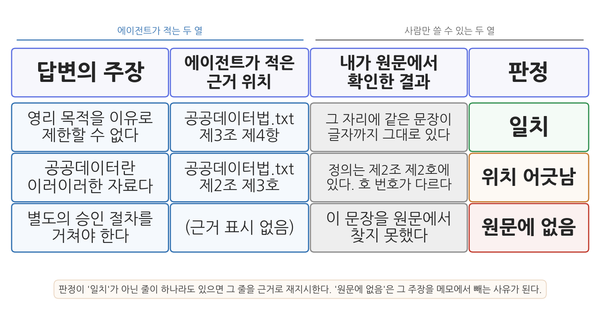
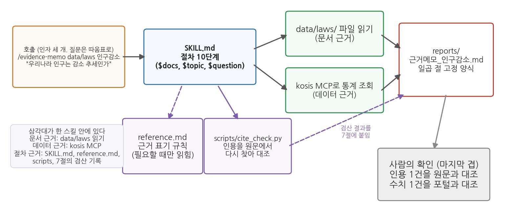

12주차 2회차. Skill과 MCP로 근거 있는 답 만들기
최종 수정: 2026-09-03 · 이 교재는 학기 중에도 계속 업데이트됩니다
이 실습에서 하는 것
1회차에서 그라운딩(문서에 근거해 답하게 만들기)과 RAG, 그리고 근거의 삼각대(문서·데이터·절차)를 배웠다. 오늘은 그 삼각대를 실제로 조립한다. 전반부에서는 실제 법률 전문을 에이전트에게 주고 조문을 인용하는 답을 받아 본 뒤, 같은 질문을 그라운딩 없이 던져 두 답이 어떻게 다른지 비교 실험을 한다. 이어서 답변의 주장을 한 줄씩 원문과 맞대 보는 인용 검증표를 만들고, 문서가 둘로 늘었을 때 어느 문서에서 근거를 찾았는지 보고하게 한다. 후반부에서는 6주차에 등록해 둔 kosis MCP로 통계 근거를 붙이고, 근거 표기 규칙을 정해 손으로 검산한 뒤, 정의를 묻는 질문과 수치를 묻는 질문과 문서에 답이 없는 질문 셋에 같은 절차를 돌려 본다. 마지막으로 이 근거 만들기 절차 전체를 4주차와 5주차에서 배운 방식대로 하나의 Skill로 표준화하고, 인용을 원문에서 다시 찾는 검산 스크립트를 붙이고, 새 대화에서 독립 검산까지 마친다.
이 실습이 끝나면 다음 산출물이 남는다.
data/laws/공공데이터법.txt: 그라운딩 재료로 쓴 법률 전문data/laws/데이터제공지침_예시.txt: 두 번째 문서 (수업용으로 만든 가상의 지침)- 그라운딩 유무 비교 기록표 (표 12-3)와 인용 검증표 (표 12-4)
- 두 문서 근거 위치 점검표 (표 12-5)
- 근거 표기 규칙표 (표 12-6)와 질문 세 유형 비교표 (표 12-8)
reports/근거메모_인구감소.md: kosis MCP 통계 근거가 붙은 메모.claude/skills/evidence-memo/: 근거 메모 절차를 표준화한 Skill (SKILL.md,reference.md,scripts/cite_check.py)- 새 대화 독립 검산 대조표 (표 12-9)와, 선택 심화로 만드는 종합 근거 메모
오늘도 2주차 실습처럼 "예상을 적고 → 실험하고 → 관찰을 기록"하는 자세로 진행한다. 특히 2.2의 비교 실험과 2.3의 인용 검증표는 에이전트가 틀리는 장면을 포착하는 것이 목적이므로, 틀린 답이 나오면 실망할 일이 아니라 기록할 일이다.
준비물
| 구분 | 내용 |
|---|---|
| 폴더 | 학기 프로젝트 폴더 (안에 data, code, figures, reports 폴더) |
| 데이터 1 | 「공공데이터의 제공 및 이용 활성화에 관한 법률」 전문. 국가법령정보센터(law.go.kr)에서 2.1 단계에 따라 직접 저장 (법률 제19408호, 2023. 11. 17. 시행 기준) |
| 데이터 2 | data/laws/데이터제공지침_예시.txt. 2.4 단계에서 에이전트에게 만들게 하는 가상의 지침 문서 (수업용 예시) |
| 데이터 3 | kosis MCP로 실습 중 직접 조회 (6주차에 등록한 서버. /mcp로 연결 상태 미리 확인) |
| 도구 | VSCode + Claude Code 확장, uv 기반 Python 환경 (3주차) |
| 선수 내용 | 12주차 1회차 (그라운딩, RAG, 근거의 삼각대), 6주차 (kosis MCP 등록·수집), 4주차 (SKILL.md 만들기), 5주차 (인자, 참조 파일, 스크립트), 2주차 2회차 (검증 손잡이 실험, 새 대화 독립 검산) |
2.1 법령·지침 문서를 주고 근거 있는 답 받기
무엇을 왜 하는가. 첫 단계는 그라운딩의 재료 만들기다. 국가법령정보센터(law.go.kr)에 접속해 "공공데이터의 제공 및 이용 활성화에 관한 법률"을 검색하고, 법령 본문 화면에서 전체 조문을 복사한다. VSCode에서 새 파일 data/laws/공공데이터법.txt를 만들어 붙여 넣고 저장한다. 파일 맨 위에 출처와 기준을 한 줄 적어 두면 좋다 ("출처: 국가법령정보센터, 법률 제19408호, 시행 2023. 11. 17."). 법령은 개정되므로, 여러분이 접속한 시점의 현행 법령 번호를 화면에서 확인해 그대로 적는다.
재료를 사람이 직접 확인해서 준다는 점이 중요하다. 이 한 줄의 출처 표기가 앞으로 만들 모든 근거 메모의 뿌리가 된다. 어떤 판의 법령을 읽고 답한 것인지 적혀 있지 않으면, 옳은 인용인지 옛 조문인지 나중에 가릴 방법이 없다.
파일이 준비되면 1회차 도입부 과장의 질문을 그라운딩된 형태로 던져 본다. 1회차 표 12-1의 다섯 요소(재료 지정, 범위 제한, 인용 요구, 해석 분리, 한계 고지)가 모두 들어 있는지 확인하며 읽어 보라.
"data/laws/공공데이터법.txt 파일을 읽고 다음 질문에 답해 줘. 질문: 민간 업체가 구청의 주차장 데이터를 받아 유료 앱을 만들려고 한다. 공공기관이 영리 목적이라는 이유로 제공을 거부할 수 있는가?
규칙: (1) 반드시 이 파일의 내용에만 근거해서 답할 것. 파일에 없는 내용은 '문서에서 확인되지 않는다'라고 말할 것. (2) 근거가 되는 조문의 번호와 해당 문장을 원문 그대로 인용할 것. (3) 원문 인용과 너의 해석을 구분해서 쓸 것. (4) 답변 끝에 이 답변이 법적 자문이 아니며 최종 판단은 소관 기관 확인이 필요하다는 점을 밝힐 것."
예상되는 에이전트의 행동과 결과. 도구 사용 로그에 파일 읽기가 먼저 나타난다. 이것이 그라운딩의 물증이다. 파일이 길면 여러 번에 나누어 읽는 호출이 이어지기도 한다. 이어서 제3조(기본원칙)의 영리적 이용 관련 항과 제17조(제공대상 공공데이터의 범위) 등을 인용하며, "원칙적으로 영리적 이용을 이유로 거부할 수 없으나, 제외 사유에 해당하는 정보가 포함되면 다르다"는 취지의 답이 온다. 화면의 모양은 대략 다음과 같다. 인용문 자리는 여러분 파일에서 확인해야 하는 부분이라 비워 두었다.
[근거 조문]
공공데이터법.txt 제3조 제4항
「(원문 그대로 옮긴 문장. 여러분 파일의 문장과 글자까지 같아야 한다)」
공공데이터법.txt 제17조 제1항
「(원문 그대로 옮긴 문장)」
[해석]
위 두 조문을 함께 읽으면, 영리 목적이라는 사유만으로는 제공을 거부하기 어렵다.
다만 제공 대상에서 제외되는 정보가 섞여 있는 경우는 따로 판단해야 한다.
[한계]
이 답변은 법적 자문이 아니며, 최종 판단은 소관 기관 확인이 필요하다.
세 덩어리로 나뉜 이 모양이 오늘 계속 쓰게 될 답변의 기본형이다. 인용은 대조로 검증하고, 해석은 인용과 견주어 검증하며, 한계 고지는 이 문서의 지위를 밝힌다. 세 덩어리가 섞여 한 문단으로 나왔다면 규칙 (3)이 지켜지지 않은 것이므로 "인용과 해석을 절로 나눠서 다시 써 줘"라고 재지시한다.
검증. 에이전트가 인용한 조문을 하나 골라 원문과 대조한다. VSCode에서 공공데이터법.txt를 열고 Ctrl+F로 조문 번호(예: "제3조")를 검색해, 인용문이 원문과 글자 단위로 일치하는지 확인하라. 세 가지를 본다. (1) 인용된 조문 번호가 실제로 존재하는가. (2) 인용문이 원문과 같은가 (요약이나 변형을 인용처럼 표시하지 않았는가). (3) 에이전트의 해석이 인용된 원문에서 실제로 따라 나오는가. 하나라도 어긋나면 그 지점을 기록하고, "제3조 인용이 원문과 다르다. 원문을 다시 확인해서 고쳐 줘"라고 재지시해 보라.
대조할 때 요령이 하나 있다. 인용문의 앞부분 예닐곱 글자만 복사해 Ctrl+F에 붙여 넣는 것이다. 문장 전체로 검색하면 줄바꿈이나 공백 하나 때문에 "찾을 수 없음"이 뜨는 일이 잦은데, 짧은 조각으로 찾으면 그 자리로 곧장 이동한다. 이동한 자리의 문장을 눈으로 끝까지 읽어 인용문과 견주면 된다.
한 걸음 더. 파일에 없는 것도 물어보라. 문서 맨 끝 조문보다 큰 번호를 하나 골라 "이 법 제○○조의 내용을 알려 줘"라고 묻는 것이다. 범위 제한 규칙이 잘 걸려 있다면 "문서에서 확인되지 않는다"는 답이 와야 한다. 그럴듯한 조문을 지어내면, 확인 없이 생성된 답이 그라운딩 지시의 틈을 뚫고 나온 장면이므로 기록해 두라. 이 장면은 2.3에서 본격적으로 다룬다.
2.2 그라운딩 없는 답변과 비교: 무엇이 달라지나
무엇을 왜 하는가. 이제 대조 실험이다. 2주차 2.2절의 검증 손잡이 실험과 같은 구도인데, 이번 대상은 통계값이 아니라 법조문이다. 같은 질문을 두 가지 방식으로 던져 나란히 놓으면, 그라운딩이 무엇을 바꾸는지가 말이 아니라 관찰로 남는다.
실험 A. 기억에서 답하게 하기. 새 대화를 연다(맥락창에 남아 있는 법률 파일의 영향을 차단하기 위해서다. 2주차에서 배운 대로, 새 대화는 빈 책상에서 시작한다).
"파일 확인이나 웹 검색 없이, 기억만으로 답해 줘. 「공공데이터의 제공 및 이용 활성화에 관한 법률」 제2조에서 '공공데이터'를 어떻게 정의하고 있지? 정의 문장을 그대로 인용하고, 몇 호에 있는 정의인지도 알려 줘."
실험 B. 문서에서 답하게 하기. 또 새 대화를 열고, 같은 질문을 그라운딩된 형태로 묻는다.
"data/laws/공공데이터법.txt를 읽고, 제2조에서 '공공데이터'를 정의한 문장을 원문 그대로 인용해 줘. 몇 호에 있는지, 파일의 어느 부분에서 찾았는지도 알려 줘."
예상되는 에이전트의 행동과 결과. 두 답변은 겉모습부터 다르다. 실험 A에서는 도구 사용 로그가 비어 있고, 답변이 곧바로 정의 문장으로 시작한다. 유보 표현이 붙기도 하고 붙지 않기도 한다. 실험 B에서는 파일 읽기 호출이 먼저 나타나고, 답변에 위치 정보가 따라붙는다. 화면의 모양을 견주면 이렇다.
[실험 A] (도구 호출 없음)
"공공데이터"란 ... 를 말합니다. 제2조 제3호의 정의입니다.
[실험 B] (파일 읽기 1회)
파일 data/laws/공공데이터법.txt 에서 찾았습니다.
제2조 정의 조항의 ○호: 「(원문 그대로)」
이 문장은 파일 앞부분, 제1조 목적 조항 바로 다음에 있습니다.
실험 B의 답에는 대조에 필요한 것이 모두 들어 있다. 어느 파일인지, 몇 호인지, 파일의 어디인지, 그리고 원문이 무엇인지다. 실험 A의 답에는 그중 무엇도 없다. 있는 것은 정의 문장 하나와 호 번호 하나뿐이고, 그 둘이 맞는지는 결국 파일을 열어야 알 수 있다.
관찰 과제. 두 답변을 나란히 놓고 다음 표를 채운다. 원문 대조의 기준은 여러분이 저장한 파일이다.
표 12-3. 그라운딩 비교 기록표
| 비교 항목 | 실험 A (기억) | 실험 B (문서) |
|---|---|---|
| 도구 사용 로그에 파일 읽기가 있었는가 | ||
| 조문 번호(제2조 제○호)가 원문과 일치하는가 | ||
| 인용문이 원문과 글자 단위로 일치하는가 | ||
| 답변에 유보("확실하지 않다" 등)가 있었는가 | ||
| 근거의 위치(파일·조문·문단)가 답변에 적혀 있었는가 | ||
| 내가 이 답을 검증하는 데 걸린 시간 |
실험 A에서 흔히 관찰되는 것은 "거의 맞는" 답이다. 정의의 취지는 대체로 맞게 옮기는데, 호 번호가 어긋나거나, 원문에 없는 표현이 인용부호 안에 들어가 있거나, 옛 조문(개정 전 문구)을 현행처럼 말하는 식이다. 이것이 법령·규정 영역에서 검증 없는 인용이 위험한 이유다. 완전히 엉뚱한 답은 걸러내기 쉽지만, 거의 맞는 답은 원문을 펴 보기 전에는 가려낼 수 없다. 실험 A가 우연히 정확했더라도 결론은 같다. 검증하려면 어차피 원문이 필요했고, 그렇다면 처음부터 원문을 주고 인용을 받는 쪽이 빠르다.
검증. 표의 마지막 행을 성의껏 재라. 실험 A의 답을 검증하려면 파일을 열고, 제2조를 찾고, 호를 하나씩 읽어 내려가며 어느 호가 정의인지 확인하고, 그 문장을 답변과 견주어야 한다. 실험 B의 답을 검증하려면 알려 준 호로 곧장 가서 문장 하나를 비교하면 끝난다. 두 시간을 초 단위로 적어 두면, 다음 절부터 왜 근거의 위치를 그렇게 집요하게 요구하는지가 몸으로 이해된다. 시간을 재기 어렵다면 "몇 번의 검색으로 확인했는가"를 세어도 좋다.
이 실험의 교훈은 2주차와 이어진다. 묻는 방식이 답의 신뢰도를 결정한다. 다만 오늘 한 가지가 추가되었다. 그라운딩의 진짜 이득은 정답률이 아니라 검증 비용에 있다는 것이다. 실험 B의 답은 인용과 위치가 붙어 있어 1분이면 대조가 끝난다. 보고서에 들어갈 법령·지침 인용은 앞으로 반드시 실험 B의 방식으로 받는다.
2.3 인용 검증표: 주장 하나에 근거 한 줄씩 대조하기
무엇을 왜 하는가. 2.1의 검증에는 빈틈이 있다. 인용 하나를 골라 대조했을 뿐, 답변의 나머지 문장들은 확인하지 않았다. 그런데 답변에서 분량을 차지하는 것은 인용이 아니라 해석이고, 해석 문장 사이에는 근거 표시가 없는 주장이 조용히 섞여 들어오기 쉽다. 그래서 답변을 통째로 읽지 말고 주장 단위로 쪼갠 다음, 주장마다 근거 위치를 붙이고, 그 위치를 원문에서 확인한 결과를 적는다. 이 네 열짜리 표가 오늘 배우는 가장 실용적인 도구인 인용 검증표다.
표를 만드는 일의 절반은 에이전트에게 맡길 수 있다. 답변을 주장 단위로 쪼개고 근거 위치를 옮겨 적는 것은 기계적인 일이기 때문이다. 나머지 절반, 곧 원문에서 확인한 결과를 적는 일은 사람만 할 수 있다.
"방금 네가 준 답변을 주장 단위로 쪼개서 표로 만들어 줘. 열은 (1) 번호, (2) 주장 한 문장, (3) 근거 위치(파일명과 조문 번호), (4) 근거가 되는 원문 인용, 이렇게 네 개야.
규칙: (1) 답변에 실제로 있던 문장만 쓰고 새 내용을 보태지 말 것. (2) 근거 위치를 댈 수 없는 주장은 근거 위치 칸에 '근거 없음'이라고 적고 그 행을 지우지 말 것. (3) 원문 인용은 파일에서 다시 확인해서 옮길 것. 기억으로 채우지 말 것. (4) 표만 출력하고 해설은 붙이지 마."
예상되는 에이전트의 행동과 결과. 도구 사용 로그에 파일 읽기가 한 번 더 나타나고(규칙 3 때문이다), 네 열짜리 표가 온다. 주장은 대개 세 개에서 다섯 개로 쪼개진다. 화면의 모양은 다음과 같다.
| 번호 | 주장 | 근거 위치 | 원문 인용 |
|---|---|---|---|
| 1 | 영리 목적이라는 이유만으로 제공을 제한할 수 없다 | 공공데이터법.txt 제3조 제4항 | 「...」 |
| 2 | 다만 제공 대상에서 제외되는 정보는 따로 판단한다 | 공공데이터법.txt 제17조 제1항 | 「...」 |
| 3 | 별도의 승인 절차를 거쳐야 한다 | 근거 없음 | (없음) |
3번 행에 주목하라. 답변을 통째로 읽었을 때는 앞뒤 문장에 묻혀 지나쳤을 문장이, 표로 쪼개 놓으니 근거 없이 홀로 서 있다.

그림 12-4가 완성된 인용 검증표의 모습이다. 읽는 법은 왼쪽에서 오른쪽이다. 첫째 열은 답변에서 뽑아낸 주장이고, 둘째 열은 에이전트가 적은 근거 위치다. 여기까지는 에이전트의 몫이다. 셋째 열은 여러분이 파일을 열어 확인한 결과이고, 넷째 열이 그 확인의 판정이다. 세 행이 각각 다른 판정을 보여 준다. 첫 행은 위치도 문장도 맞는 일치, 둘째 행은 문장은 있는데 위치 표기가 틀린 위치 어긋남, 셋째 행은 그 문장 자체가 원문에 없는 경우다. 여기서 알 수 있는 것은 검증의 결과가 맞음과 틀림의 둘이 아니라 셋이라는 점이다. 위치 어긋남은 내용이 맞으므로 위치만 고치면 되지만, 원문에 없음은 그 주장을 메모에서 빼야 하는 사유다. 둘을 뭉뚱그려 "조금 틀렸다"고 적으면 무엇을 고쳐야 하는지 알 수 없다.
표 12-4. 인용 검증표 (셋째·넷째 열은 여러분이 채운다)
| 번호 | 주장 | 근거 위치 (에이전트) | 원문에서 확인한 결과 (사람) | 판정 |
|---|---|---|---|---|
| 1 | ||||
| 2 | ||||
| 3 | ||||
| 4 |
틀리는 장면. 문서에 없는 조항이 그럴듯하게 덧붙는다. 3번 행 같은 문장이 어떻게 들어오는지 보자. 에이전트가 다음과 같이 답했다고 하자. "영리적 이용을 이유로 제한할 수 없습니다(제3조 제4항). 다만 상업적 이용의 경우에는 별도의 이용 신청과 승인 절차를 거쳐야 합니다." 뒷문장에는 조문 번호가 없다. 그런데 앞문장에 번호가 붙어 있으므로, 빠르게 읽으면 뒷문장까지 같은 조문에서 나온 것처럼 읽힌다. 실무의 일반적인 관행을 아는 대로 보탠 문장이거나, 다른 법령의 내용이 섞여 들어온 문장일 수 있다. 어느 쪽이든 이 파일에서 나온 문장이 아니다.
발견. 표의 3번 행에서 근거 위치가 "근거 없음"이므로 곧바로 눈에 띈다. 확인은 두 단계다. 먼저 파일에서 "승인"이나 "신청"처럼 그 문장의 핵심 낱말을 Ctrl+F로 찾아본다. 그런 취지의 조문이 정말 있으면 위치를 찾아 표에 적고 판정은 위치 어긋남이 된다. 찾아지지 않거나, 찾아진 조문이 이 주장과 다른 이야기를 하고 있으면 판정은 원문에 없음이다.
재지시. 판정이 정해지면 그 판정을 근거로 다시 시킨다. 문장을 고쳐 달라고만 하지 말고, 앞으로도 같은 일이 생기지 않도록 규칙을 한 줄 덧붙이는 것이 요령이다.
"표의 3번 주장('별도의 승인 절차를 거쳐야 한다')은 내가 파일에서 찾아봤는데 근거가 되는 문장이 없어. 답변을 다시 써 줘. 규칙: (1) 파일에서 근거 문장을 찾을 수 없는 주장은 답변에서 빼거나, 빼기 어려우면 '이 부분은 문서에서 확인되지 않는다'라고 문장 안에 명시할 것. (2) 실무 관행이나 다른 법령에서 아는 내용을 보태지 말 것. (3) 고친 뒤 인용 검증표를 다시 만들어서, 어느 행을 어떻게 바꿨는지 표 아래에 한 줄로 적어 줘."
수정. 다시 온 답변에서는 3번 주장이 사라지거나 "이 부분은 문서에서 확인되지 않는다"는 문장으로 바뀐다. 사라지는 쪽이 기본이고, 남기는 쪽은 그 사항을 소관 부서에 확인해야 한다는 뜻이 되므로 나중에 근거 메모의 "확인 필요" 절로 넘어간다. 어느 쪽이든 답변에 남은 문장은 모두 근거를 갖게 된다. 틀림, 발견, 재지시, 수정의 한 바퀴가 이렇게 돈다.
검증. 표가 완성되면 세 가지를 확인한다. ① 넷째 열에 "일치"가 아닌 행이 몇 개인지 세어 답변 아래에 적는다. 0개라면 좋은 일이지만, 답변이 짧아 주장을 덜 쪼갠 것은 아닌지 다시 본다. 주장이 두 개뿐이면 대개 덜 쪼갠 것이다. ② "일치"로 적은 행 중 하나를 골라 다시 한 번 원문과 맞춰 본다. 표를 채우다 보면 확인하지 않고 일치라고 적는 일이 생기는데, 이것이 자동화 편향의 가장 흔한 모습이다. ③ 표 전체를 reports/ 폴더에 메모로 저장해 둔다. 2.10의 독립 검산에서 이 표를 다시 꺼내 쓴다.
2.4 문서가 둘일 때: 어느 파일 어디에서 찾았는지 보고하게 하기
무엇을 왜 하는가. 지금까지 문서는 하나였다. 실무에서는 그런 일이 드물다. 법률이 있고 시행령이 있고 기관의 내부 지침이 있으며, 세 문서가 같은 사안을 조금씩 다르게 다룬다. 이때 답변이 "제4조에 따르면"이라고만 적혀 있으면 어느 문서의 제4조인지 알 수 없다. 조문 번호는 문서마다 다시 시작하기 때문이다. 그래서 문서가 둘 이상이 되는 순간, 근거 표기에는 조문 번호만이 아니라 파일명이 반드시 붙어야 한다.
이것이 1회차 1.3절에서 배운 RAG의 축소판이기도 하다. RAG에서 답변 품질의 절반이 검색 단계에서 결정된다고 했는데, 여러분의 에이전트에게는 그 검색 단계가 "data/laws 폴더의 어느 파일을 열 것인가"라는 선택으로 나타난다. 문서가 둘뿐이라 둘 다 읽을 수 있지만, 답이 어느 쪽에 있었는지 보고하게 만드는 습관은 문서가 수백 개로 늘어나도 그대로 쓰인다.
먼저 두 번째 문서를 만든다. 실제 지자체 지침은 기관마다 다르고 공개 여부도 제각각이므로, 오늘은 수업용으로 만든 가상의 지침을 쓴다. 에이전트에게 파일을 만들게 하되, 내용은 아래 그대로 넣게 한다.
"data/laws/데이터제공지침_예시.txt 파일을 만들어 줘. 내용은 내가 아래에 붙여 넣는 그대로 넣고, 한 글자도 바꾸거나 보태지 마. 인코딩은 UTF-8로 저장하고, 저장한 뒤 파일 전체를 다시 읽어서 화면에 보여 줘."
○○구 공공데이터 제공 운영지침 (수업용 예시 문서)
※ 이 문서는 실습을 위해 만든 가상의 지침이다. 실재하지 않으며 실무 근거로 쓸 수 없다.
제1조(목적) 이 지침은 ○○구가 보유한 데이터의 제공 절차와 방법에 관한 사항을
정함을 목적으로 한다.
제4조(제공 신청의 처리) ① 데이터 제공 신청을 접수한 부서는 접수일부터 10일 이내에
제공 여부를 결정하여 신청인에게 통지하여야 한다.
② 제1항의 기간은 부득이한 사유가 있는 경우 10일의 범위에서 한 차례 연장할 수 있다.
제7조(제공의 방법) ① 데이터는 기계판독이 가능한 형식으로 제공하는 것을 원칙으로 한다.
② 부서의 장은 제공한 데이터의 항목, 기준시점, 갱신주기를 함께 안내하여야 한다.
제9조(제공의 제한) 부서의 장은 다른 법령에 따라 공개가 제한되는 정보가 포함된
경우 해당 부분을 분리한 후 제공하여야 한다.
이 파일의 둘째 줄을 꼭 남겨 두라. 문서 자체에 "가상"이라고 적혀 있어야, 나중에 이 파일이 다른 폴더로 복사되어 돌아다녀도 오해가 생기지 않는다. 실습용 자료에 출처와 성격을 적어 두는 습관은 6주차의 수집기록과 같은 원리다.
이제 두 문서를 함께 써야 답할 수 있는 질문을 던진다.
"data/laws 폴더의 파일을 모두 읽고 다음 질문에 답해 줘. 질문: 민간 업체가 주차장 데이터를 영리 목적으로 제공해 달라고 신청했다. (가) 영리 목적이라는 이유로 거부할 수 있는가, (나) 접수 후 언제까지 답을 주어야 하는가, (다) 어떤 형식으로 제공해야 하는가?
규칙: (1) (가)(나)(다)마다 답을 따로 쓰고, 각 답의 끝에 근거를 '[파일명 제N조 제M항]' 형식으로 붙일 것. 파일명은 확장자까지 정확히 쓸 것. (2) 두 파일 중 어느 쪽에서 찾았는지가 답마다 분명히 드러나야 해. (3) 두 파일 어디에도 없는 항목은 '두 문서에서 확인되지 않는다'라고 쓸 것. (4) 답변 맨 끝에 이번에 읽은 파일 목록을 적어 줘."
예상되는 에이전트의 행동과 결과. 도구 사용 로그에 파일 읽기가 두 번(또는 폴더 조회 한 번과 파일 읽기 두 번) 나타난다. 답변은 세 부분으로 나뉘고 각 부분 끝에 대괄호 표기가 붙는다.
(가) 영리 목적이라는 이유만으로 거부하기는 어렵다.
[공공데이터법.txt 제3조 제4항]
(나) 접수일부터 10일 이내에 제공 여부를 결정해 통지해야 한다. 부득이한 사유가
있으면 10일 범위에서 한 차례 연장할 수 있다.
[데이터제공지침_예시.txt 제4조 제1항, 제2항]
(다) 기계판독이 가능한 형식으로 제공하는 것이 원칙이다.
[데이터제공지침_예시.txt 제7조 제1항]
읽은 파일: data/laws/공공데이터법.txt, data/laws/데이터제공지침_예시.txt
이 답의 값어치는 대괄호 안에 있다. (나)와 (다)의 근거가 지침에서 왔다는 사실이 표시되어 있으므로, 다른 구청에 이 답을 그대로 옮기면 안 된다는 것을 읽는 사람이 즉시 안다. 지침은 기관마다 다르지만 법률은 같기 때문이다. 근거의 출처 파일을 밝히는 일은 답의 적용 범위를 밝히는 일이기도 하다.
틀리는 장면. 출처 파일이 뒤섞인다. 두 문서를 함께 읽히면 새로운 종류의 틀림이 생긴다. 내용은 맞는데 출처가 어긋나는 것이다. (나)의 답에 "[공공데이터법.txt 제4조 제1항]"이라고 적히는 경우가 대표적이다. 10일이라는 내용은 지침에서 온 것이 맞지만, 파일명이 법률로 적혀 있다. 조문 번호만 보고 두 문서를 오간 결과다. 또 다른 형태는 출처를 아예 생략하고 세 답을 한 문단으로 요약해 버리는 것이다. 이 경우 답은 매끄럽고 사실도 대체로 맞지만, 어느 문장이 법률이고 어느 문장이 그 구청의 지침인지 구별할 수 없게 된다.
발견. 표 12-5로 확인한다. 답변의 각 근거 표기를 그대로 옮겨 적고, 그 파일을 열어 그 조문이 정말 그 자리에 있는지 본다. 파일명이 틀렸다면 지목된 파일의 그 조문에는 다른 내용이 있거나 그 조문 자체가 없다.
표 12-5. 두 문서 근거 위치 점검표
| 답 | 에이전트가 적은 근거 표기 | 그 파일의 그 조문을 열어 본 결과 | 판정 |
|---|---|---|---|
| (가) | |||
| (나) | |||
| (다) |
재지시와 수정. 파일명이 어긋난 행을 찾았으면 "(나)의 근거로 적은 공공데이터법.txt 제4조를 열어 봤는데 처리 기한 문장이 없다. 두 파일 중 그 문장이 실제로 있는 파일을 다시 확인해서 근거 표기를 고쳐 줘"라고 지시한다. 요약해 버린 경우라면 "답을 (가)(나)(다)로 나누고 문장마다 파일명이 붙은 근거 표기를 달아 줘"라고 다시 시킨다. 고친 답으로 표 12-5를 다시 채우면 세 행이 모두 판정 "일치"가 되어야 한다.
검증. 두 가지를 더 본다. ① 답변 맨 끝의 읽은 파일 목록이 도구 사용 로그와 맞는지 대조한다. 목록에는 두 파일이 적혀 있는데 로그에는 한 번만 읽은 흔적이 있다면, 목록 쪽이 지어진 것이다. ② 두 문서 어디에도 답이 없는 질문을 하나 더 던져 본다. "제공을 거부당한 신청인은 어디에 이의를 제기하는가"가 그런 질문이다. "두 문서에서 확인되지 않는다"는 답이 오면 규칙 (3)이 작동한 것이고, 그럴듯한 절차를 지어내면 2.3의 재지시를 다시 적용한다. 이 질문은 2.7에서 다시 쓴다.
문서가 하나일 때는 파일명이 군더더기처럼 보인다. 그러나 근거 표기의 목적은 읽는 사람이 원문으로 찾아가게 하는 것이고, 찾아가려면 어느 책의 몇 쪽인지가 다 필요하다. 조문 번호만 있는 표기는 쪽 번호만 적어 둔 인용과 같다. 게다가 문서가 늘어나는 방향은 한쪽이다. 오늘 두 개인 폴더는 학기가 끝날 때쯤 대여섯 개가 되어 있을 것이고, 그때 옛 메모의 표기를 일일이 고치는 것보다 지금부터 파일명을 붙이는 편이 싸다. 1회차 1.3절에서 본 대로, 서고가 커질 때 무너지는 것은 답을 만드는 능력이 아니라 근거를 되짚는 능력이다.
2.5 kosis MCP로 통계 근거 붙이기
무엇을 왜 하는가. 삼각대의 두 번째 다리, 데이터 근거다. 과장이 후속 요청을 보냈다고 하자. "다음 보고서에 '우리나라 인구는 감소 추세다'라는 문장이 들어가는데, 뒷받침할 숫자를 붙여 줄래요?" 이 문장의 근거는 법조문이 아니라 통계다. 그리고 통계 근거를 만드는 가장 안전한 길은, 6주차에서 배운 대로 에이전트가 원천(KOSIS)에서 직접 조회해 출처와 함께 가져오게 하는 것이다. 법령 그라운딩에서 "파일을 읽고 답하라"고 했던 것과 같은 원리로, 이번에는 "MCP로 조회해서 답하라"고 못박는다.
"보고서에 '우리나라 인구는 감소 추세다'라는 문장을 쓰려고 해. kosis MCP로 최근 5년(2019-2023) 전국 주민등록 총인구를 조회해서 근거 메모를 만들어 줘.
규칙: (1) 수치는 반드시 kosis MCP 조회 결과만 쓸 것. 기억으로 보충하지 말 것. (2) 메모에는 연도별 수치 표, 이 수치가 위 문장을 뒷받침하는지에 대한 판단(수치 제시와 판단을 구분해서), 통계표 이름·ID와 출처 링크, 그리고 이 통계의 기준(주민등록 기준이라는 점)을 담을 것. (3) 증감은 계산하지 말고 값만 보여 줄 것. 증감은 내가 직접 계산한다. (4) 결과는 reports/근거메모_인구감소.md 로 저장해 줘."
예상되는 에이전트의 행동과 결과. 도구 사용 로그에 kosis 도구 호출이 나타나고, 저자가 실제로 수행했을 때 조회 결과는 다음과 같았다 (통계표 "행정구역(시군구)별 성별 인구수", DT_1B040A3, 단위 명).
| 연도 | 전국 주민등록 총인구 (명) |
|---|---|
| 2019 | 51,849,861 |
| 2020 | 51,829,023 |
| 2021 | 51,638,809 |
| 2022 | 51,439,038 |
| 2023 | 51,325,329 |
2019년 이후 4년 연속 감소했고, 2023년은 2019년보다 약 52만 명 적다. "인구는 감소 추세다"라는 문장이 수치로 뒷받침되는 것이다. 메모에는 이 표와 판단, 그리고 KOSIS 출처 링크가 담겨 있어야 한다. 응답 첫머리에는 6주차에서 본 시범서비스 안내가 붙는다. 이 안내문의 출처 링크가 메모의 출처 칸 재료가 되므로, 요약되지 않고 원문 그대로 왔는지 확인한다.
이 다섯 값은 6주차 2.6절에서 이미 수집해 data/korea_pop_2019_2023.csv로 저장해 둔 값과 같아야 한다. 두 수집이 같은 통계표에서 같은 조건으로 이루어졌기 때문이다. 6주차의 파일이 남아 있다면 열어서 다섯 값을 눈으로 맞춰 보라. 어긋나면 둘 중 하나가 다른 표를 읽었거나 조회 조건이 달랐다는 뜻이므로, 두 수집의 조회 조건을 나란히 놓고 비교한다.
검증. ① 도구 사용 로그에 kosis 도구 호출이 실제로 있는지 확인한다. 없다면 기억으로 답한 것이므로 재지시한다(6주차에서 연습한 그 검증이다). ② 값 하나(예: 2023년 51,325,329명)를 KOSIS 웹 화면과 대조한다. 브라우저에서 통계표 "행정구역(시군구)별 성별 인구수"를 열고 항목 총인구수, 지역 전국, 시점 2023년을 골라 화면의 숫자를 자릿수 하나까지 맞춘다. ③ 해석이 수치에서 따라 나오는지 본다. 법령 그라운딩의 "해석 분리" 원칙이 통계에도 그대로 적용된다. 수치는 수치대로 제시되고, "감소 추세"라는 판단이 그 수치로부터 나오는 구조인가. ④ 메모에 증감 값이 들어 있지 않은지 본다. 규칙 (3)으로 금지했는데도 계산해 넣었다면 지시 하나가 무시된 것이므로 지워 달라고 하고, 계산은 2.6에서 여러분이 직접 한다.
한 가지 함정도 확인해 두자. 지시문에서 "주민등록 기준이라는 점"을 명시하게 한 이유다. 이 통계는 주민등록표에 올라 있는 사람의 수이며, 국내 거주 외국인 등은 다른 통계로 잡힌다. 6주차 메타데이터 원칙("같은 인구라도 기준에 따라 값이 다르다")이 근거 메모에서도 살아 있어야, "인구"라는 한 단어가 뜻하는 바를 놓고 생기는 오해를 막을 수 있다. 근거는 수치만이 아니라 수치의 정의까지 포함해야 완전해진다.
"2023년 우리나라 인구는 5,132만 명"이라는 문장만 놓고 보면 어디서도 틀린 데가 없어 보인다. 그러나 같은 해의 인구를 인구총조사 기준으로 말하는 자료와 나란히 놓이는 순간, 두 숫자가 달라 보고서를 읽는 사람이 어느 쪽이 맞는지 묻게 된다. 그때 답할 수 있는 근거는 "주민등록 기준이고, 통계표는 이것이며, 조회일은 언제"라는 표기뿐이다. 수치 옆에 정의와 출처를 붙이는 일은 꼼꼼함의 문제가 아니라, 나중에 받을 질문에 답할 수 있는 상태를 지금 만들어 두는 일이다.
2.6 근거 표기 규칙 정하고 손으로 검산하기
무엇을 왜 하는가. 지금까지 만든 근거는 형식이 제각각이다. 문서 근거에는 "[파일명 제N조 제M항]"이라는 표기를 썼는데 통계 근거에는 통계표 이름만 붙어 있거나, 어느 메모에는 조회일이 있고 어느 메모에는 없다. 표기가 흔들리면 두 가지가 곤란해진다. 첫째, 읽는 사람이 원문으로 찾아가는 길이 메모마다 달라진다. 둘째, 나중에 스킬로 굳힐 때 무엇을 반드시 넣으라고 적어야 할지 정할 수 없다. 그래서 근거의 종류별로 반드시 붙일 항목을 표 하나로 고정한다. 이 표는 잠시 뒤 스킬의 참조 파일이 된다.
표 12-6. 근거 표기 규칙
| 근거 종류 | 반드시 붙일 항목 | 표기 예 |
|---|---|---|
| 문서 근거 | 파일명(확장자 포함), 조문 번호(항·호까지), 원문 인용, 확인일 | [공공데이터법.txt 제3조 제4항] 「(원문 그대로)」 (확인일 예: 2026-11-20) |
| 데이터 근거 | 통계표 이름, 통계표 ID, 항목, 지역, 기간, 단위, 조회 경로, 조회일 | 행정구역(시군구)별 성별 인구수(DT_1B040A3), 항목 총인구수, 전국, 2019-2023년, 단위 명, kosis MCP 조회, 조회일 예: 2026-11-20 |
| 계산 결과 | 계산식, 입력값의 출처, 계산한 주체 | 524,532명 감소 = 51,849,861 - 51,325,329 (두 값 모두 위 데이터 근거, 손 계산) |
| 없음의 근거 | 확인한 문서·통계표의 범위, 확인 방법 | data/laws의 두 파일에서 "이의"로 검색. 해당 조문 없음 |
넷째 행이 낯설 것이다. "없다"는 것도 근거가 필요하다는 뜻이다. "문서에서 확인되지 않는다"는 답만 적혀 있으면, 읽는 사람은 정말 없는 것인지 대충 찾다 만 것인지 알 수 없다. 어느 범위를 어떤 방법으로 확인했는지가 함께 적혀야 그 문장도 검증 가능한 문장이 된다. 2.4에서 던진 이의 제기 질문의 답이 이 형식으로 적혀야 한다.
"reports/근거메모_인구감소.md 를 열어서 근거 표기를 아래 규칙에 맞게 고쳐 줘.
규칙: (1) 문서 근거는 '[파일명 제N조 제M항] 「원문 인용」' 형식으로 쓰고 확인일을 괄호에 적는다. (2) 데이터 근거는 통계표 이름, 통계표 ID, 항목, 지역, 기간, 단위, 조회 경로, 조회일을 한 줄에 모두 적는다. (3) 문서나 조회 결과에 없는 항목은 '없음'이라고만 쓰지 말고, 어느 범위를 어떻게 확인했는지 함께 적는다. (4) 조회일과 확인일은 네가 임의로 정하지 말고 빈칸으로 두고 나에게 물어봐. (5) 수치 자체는 한 글자도 바꾸지 말고 표기만 고칠 것. 고친 뒤 바뀐 줄만 목록으로 보여 줘."
예상되는 에이전트의 행동과 결과. 메모의 2절과 3절이 다시 쓰이고, 바뀐 줄의 목록이 화면에 온다. 데이터 근거 절은 대략 다음 모양이 된다.
## 3. 데이터 근거
행정구역(시군구)별 성별 인구수(DT_1B040A3), 항목 총인구수, 전국,
2019-2023년, 단위 명, kosis MCP 조회, 조회일 ( )
출처: (서버 안내문의 KOSIS 링크)
| 연도 | 총인구(명) |
|---|---|
| 2019 | 51,849,861 |
...
조회일이 빈칸으로 온 것이 규칙 (4) 때문이다. 날짜는 에이전트가 지어내기 쉬운 항목이면서 동시에 근거의 유효기간을 정하는 항목이라, 사람이 채우게 두는 편이 안전하다. 여러분이 실제로 조회한 날짜를 빈칸에 적는다.
손 검산. 이제 계산 결과 근거를 만든다. 2.5의 지시문에서 증감 계산을 금지한 이유가 여기 있다. 사람이 먼저 계산하고 에이전트의 계산은 나중에 받아 대조해야, 에이전트의 숫자를 보고 "맞는 것 같다"고 넘어가는 일이 생기지 않는다. 계산기로 표 12-7의 빈칸을 채워라. 6주차 2.6절에서 같은 계산을 한 적이 있는데, 그때의 목적이 수집 결과 확인이었다면 오늘의 목적은 보고서 문장마다 계산 근거를 붙이는 것이다.
표 12-7. 보고서 문장과 그 계산 근거 (수치 칸은 직접 채운다)
| 보고서에 쓸 문장 | 수치 | 계산식 | 입력값의 출처 |
|---|---|---|---|
| 2019년 이후 4년 연속 감소했다 | 연도별 값을 앞 해와 차례로 비교 | 데이터 근거의 다섯 값 | |
| 2023년은 2019년보다 ( )명 적다 | 51,325,329 - 51,849,861 | 데이터 근거의 두 값 | |
| 5년 사이 감소율은 약 ( )%다 | 위 감소분 ÷ 51,849,861 | 위 계산 결과와 데이터 근거 | |
| 한 해 감소 폭은 ( )명에서 ( )명 사이다 | 전년 대비 차 4건 중 최소와 최대 | 데이터 근거의 다섯 값 |
다 채웠으면 아래 값과 맞춰 본다. 손 검산을 끝낸 뒤에만 보라. 전년 대비 증감은 2020년 -20,838명, 2021년 -190,214명, 2022년 -199,771명, 2023년 -113,709명이다. 네 값이 모두 음수이므로 첫 문장의 "4년 연속 감소"가 성립한다. 2019년 대비 누적 증감은 -524,532명이고 네 값의 합과 같다. 감소율은 524,532를 51,849,861로 나눈 약 1.0%다. 한 해 감소 폭은 20,838명에서 199,771명 사이로 열 배 가까이 벌어진다. 마지막 사실이 중요하다. "감소 추세"라는 한마디는 맞지만, 그 속도가 해마다 크게 다르다는 것까지 적어야 정직한 요약이 된다. 추세의 방향과 속도는 다른 이야기다.
검증. ① 네 개의 전년 대비 증감을 모두 더한 값이 누적 증감 -524,532명과 같은지 확인한다. 다르면 어느 해의 뺄셈이 틀린 것이다. ② 이제 에이전트에게 같은 계산을 시켜 여러분의 값과 대조한다. "이 다섯 값으로 전년 대비 증감과 2019년 대비 누적 증감, 감소율을 계산해서 표로 보여 줘. 계산식도 함께 적어 줘"라고 지시하면 된다. 네 칸이 모두 같으면 사람과 에이전트가 독립적으로 같은 결과에 이른 것이고, 다르면 계산식을 나란히 놓고 어느 쪽이 틀렸는지 가린다. ③ 고쳐진 메모의 데이터 근거 줄에 여덟 항목(통계표 이름, ID, 항목, 지역, 기간, 단위, 조회 경로, 조회일)이 모두 있는지 손가락으로 세어 확인한다. 하나라도 빠졌으면 그 항목을 지목해 다시 채우게 한다.
2.7 질문 세 유형으로 같은 절차 돌리기
무엇을 왜 하는가. 지금까지 다룬 질문은 성격이 제각각이었다. 정의를 묻는 질문(2.2), 수치를 묻는 질문(2.5), 문서에 답이 없는 질문(2.4의 마지막)이다. 세 질문에 같은 절차를 돌려 보면, 근거의 종류에 따라 검증 방법과 위험한 실패의 모양이 어떻게 달라지는지가 한눈에 들어온다. 이 비교가 오늘 배운 것을 정리하는 자리이면서, 잠시 뒤 만들 스킬이 세 경우를 모두 감당할 수 있는지 미리 시험하는 자리이기도 하다.
세 질문을 새 대화에서 차례로 던진다. 같은 대화에서 이어 물으면 앞 질문의 답이 뒤 질문에 스며들 수 있다.
"data/laws 폴더의 파일을 모두 읽고, 필요하면 kosis MCP로 조회해서 다음 질문에 답해 줘. 질문: (여기에 아래 세 질문 중 하나를 넣는다)
규칙: (1) 답의 근거를 표 12-6의 표기 규칙대로 붙일 것. 문서 근거는 파일명과 조문 번호, 원문 인용을, 데이터 근거는 통계표 이름과 ID, 조회 조건을 적을 것. (2) 문서에도 통계에도 없는 내용이면 '확인되지 않는다'라고 답하고, 어느 범위를 어떻게 확인했는지 적을 것. (3) 답을 지어내지 말고, 확인이 필요한 사항은 답 끝에 질문 형태로 남길 것.
질문 A(정의): 이 법에서 '공공데이터'를 어떻게 정의하고 있는가?
질문 B(수치): 우리나라 주민등록 인구는 최근 5년 동안 어떻게 변했는가?
질문 C(문서에 없는 것): 데이터 제공을 거부당한 신청인은 어디에 이의를 제기할 수 있는가?"
예상되는 에이전트의 행동과 결과. 세 답의 모양이 뚜렷이 갈린다. 질문 A에서는 파일 읽기 호출만 나타나고 답은 조문 인용 한 덩어리다. 질문 B에서는 kosis 도구 호출이 나타나고 답은 표와 출처다. 질문 C에서는 파일 읽기 호출이 나타난 뒤 "두 문서에서 확인되지 않는다"는 답과 확인 범위가 온다. 화면의 모양을 견주면 이렇다.
[A] 파일 읽기 1회
[공공데이터법.txt 제2조 제2호] 「(원문 그대로)」
[B] kosis 도구 호출 1회 이상
행정구역(시군구)별 성별 인구수(DT_1B040A3), 항목 총인구수, 전국, 2019-2023년
| 2019 | 51,849,861 | ... | 2023 | 51,325,329 |
[C] 파일 읽기 2회
두 문서에서 확인되지 않는다. data/laws의 두 파일에서 "이의", "불복",
"재심"으로 검색했으나 관련 조문이 없다. 확인 필요: 소관 부서 또는
상위 법령에서 이의 제기 절차를 확인해야 한다.
틀리는 장면. 없는 답을 만들어 낸다. 질문 C가 오늘의 마지막 함정이다. 이 질문에는 답할 만한 상식이 넉넉히 있다. 행정 절차에는 대개 이의 신청이나 심판 같은 길이 있고, 에이전트는 그런 일반적인 지식을 가지고 있다. 그래서 규칙 (2)가 약하게 걸리면 "○○에 이의를 제기할 수 있습니다"라는 답이 근거 표기 없이 나온다. 내용이 아주 틀리지 않을 수도 있다는 점이 이 실패를 더 위험하게 만든다. 그럴듯하고 아마 대체로 맞는 답이, 우리가 가진 두 문서와는 아무 상관 없이 나온 것이다. 보고서에 이 문장을 옮겨 적고 "근거는 공공데이터법입니다"라고 말하는 순간, 대조할 수 없는 인용이 하나 생긴다.
발견과 재지시. 발견은 간단하다. 답에 근거 표기가 붙어 있는지 보고, 붙어 있다면 그 자리를 열어 본다. 표기가 없으면 그 자체로 규칙 위반이다. 재지시는 다음과 같이 한다. "방금 답에 근거 표기가 없어. data/laws의 두 파일에서 이의 제기 절차를 다룬 조문을 찾아보고, 없으면 '두 문서에서 확인되지 않는다'라고만 답해 줘. 어떤 낱말로 검색했는지도 적어 줘. 다른 법령이나 일반적인 행정 절차 지식으로 보충하지 마." 다시 온 답에는 검색한 낱말이 적히고, 확인 필요 절에 "소관 부서 확인"이 남는다. 이것이 오늘 배운 세 겹 검증 중 첫째 겹, 곧 "없다고 답할 자리"를 지시문에 마련해 두는 일의 결과다.
표 12-8. 질문 세 유형 비교표
| 비교 항목 | 질문 A (정의) | 질문 B (수치) | 질문 C (없는 것) |
|---|---|---|---|
| 근거의 종류 | 문서 근거 | 데이터 근거 | 없음의 근거 |
| 로그에 나타나야 할 도구 | 파일 읽기 | kosis 도구 호출 | 파일 읽기 |
| 답에 붙어야 할 표기 | 파일명·조문·원문 | 통계표 이름·ID·조회 조건 | 확인 범위와 검색 방법 |
| 내가 검증하는 방법 | 원문과 글자 대조 | 포털 화면과 값 대조 | 같은 낱말로 직접 검색 |
| 위험한 실패의 모양 | 거의 맞는 인용 | 기억으로 답한 수치 | 그럴듯한 절차 지어내기 |
| 이번 실행에서 실제로 관찰한 것 |
마지막 행을 채우는 것이 이 절의 과제다. 세 실행에서 무엇을 보았는지 한 줄씩 적으면 된다. "A는 호 번호가 맞았음", "B는 도구 호출 확인, 2023년 값 포털과 일치", "C는 처음에 근거 없이 답했고 재지시 후 확인되지 않는다고 답함" 정도면 충분하다.
검증. ① 세 답이 각각 다른 도구를 썼는지 로그로 확인한다. 질문 B에서 파일 읽기만 있고 kosis 호출이 없다면 기억으로 답한 것이다. ② 질문 A의 답을 2.2의 실험 B와 대조한다. 같은 질문이므로 같은 호 번호, 같은 원문이 나와야 한다. 다르면 둘 중 하나가 틀렸으므로 원문을 다시 연다. ③ 질문 C에서 에이전트가 검색했다고 적은 낱말로 여러분도 직접 파일을 검색해 본다. 정말 없는지 확인하는 것이 "없음의 근거"를 검증하는 유일한 방법이다. 이 셋을 마치면 표 12-8의 마지막 행이 자연히 채워진다.
2.8 근거 메모 절차를 Skill로 표준화하기
무엇을 왜 하는가. 오늘 2.1부터 2.7까지 한 일을 돌아보면, 이것은 앞으로 계속 반복될 절차다. 질문을 받는다, 관련 법령과 지침을 그라운딩해 조문을 인용한다, 인용을 원문과 대조한다, 필요한 통계를 MCP로 조회해 출처와 함께 붙인다, 해석과 한계를 구분해 적는다. 4주차의 기준으로 말하면 "같은 지시를 세 번째 치기" 전에 스킬로 내릴 때다. 이번에는 4주차 과제에서 연습한 분업을 쓴다. 초안은 에이전트에게 맡기고, 기준은 사람이 다듬는다.
"오늘 이 대화에서 한 작업(법령 파일 그라운딩 답변, 인용 검증, kosis MCP 통계 근거)을 표준 절차로 묶은 스킬을 만들려고 해. .claude/skills/evidence-memo/SKILL.md 초안을 작성해 줘.
요구사항: (1) $ARGUMENTS 로 질문을 받는다. (2) 절차에 다음을 포함할 것. 질문과 관련된 문서가 data/laws 폴더에 있으면 읽고 파일명과 조문 번호, 원문을 인용한다. 통계 근거가 필요한 질문이면 kosis MCP 도구로 조회하고 통계표 이름·ID·링크를 남긴다. 원문 인용과 해석을 구분한다. 문서와 조회 결과에 없는 내용은 없다고 쓴다. (3) 산출물은 reports/근거메모_<주제>.md 로 저장하고, 형식은 질문, 문서 근거, 데이터 근거, 해석, 확인 필요(사람 검토용), 한계 고지의 여섯 절로 할 것. (4) 초안을 만든 뒤 내가 다듬을 테니, 절차마다 왜 넣었는지 한 줄씩 설명해 줘."
예상되는 에이전트의 행동과 결과. 에이전트가 SKILL.md 초안을 만들어 준다(에이전트가 만드는 초안은 그때그때 조금씩 다르다. 2주차의 비결정성이다). 여러분이 할 일은 1회차에서 배운 기준들이 절차에 박혀 있는지 검토하고 다듬는 것이다. 다듬은 뒤의 모습은 대략 다음과 같아야 한다.
---
name: evidence-memo
description: 질문을 받아 법령·지침(문서 근거)과 KOSIS 통계(데이터 근거)를 갖춘
근거 메모를 만든다. 근거 메모, 근거 붙여, 조문과 통계로 답해 달라는 요청에 사용.
argument-hint: [질문]
---
다음 질문에 대한 근거 메모를 작성하라: $ARGUMENTS
## 절차
1. data/laws 폴더에서 질문과 관련된 문서 파일을 찾아 읽는다. 관련 파일이
없으면 "관련 문서 파일 없음"이라고 메모에 적는다.
2. 문서 근거: 근거 조문의 파일명과 번호, 원문을 그대로 인용한다. 파일에 없는
내용은 "문서에서 확인되지 않는다"라고 쓴다.
3. 데이터 근거: 통계로 뒷받침할 부분이 있으면 kosis MCP 도구로 조회한다.
통계표 이름, 표 ID, 출처 링크, 수치의 기준(정의)을 함께 남긴다.
기억 속의 수치를 쓰지 않는다.
4. 해석: 인용·수치와 구분되는 별도 절에 쓴다.
5. 판단이 필요한 사항은 결정하지 말고 "확인 필요" 절에 질문 형태로 남긴다.
6. 메모 끝에 이 문서가 참고자료이며 법적 자문이 아니라는 한계를 밝힌다.
7. reports/근거메모_<주제>.md 로 저장한다.
## 산출물 형식
# 근거 메모: <질문 요약>
## 1. 질문
## 2. 문서 근거 (파일명·조문 인용)
## 3. 데이터 근거 (출처 링크 포함)
## 4. 해석
## 5. 확인 필요 (사람 검토용)
## 6. 한계 고지
주목할 점이 하나 있다. 절차 3에서 스킬이 MCP 도구 사용을 지시하고 있다. 4주차의 csv-profile이 "파일을 읽고 계산하라"는 절차였다면, 이 스킬은 그라운딩(1-2단계)과 MCP(3단계)를 한 절차 안에 엮는다. 1회차에서 말한 근거의 삼각대가 스킬 본문에 그대로 구현된 것이고, 스킬 자체가 절차 근거(이 메모가 어떤 절차로 만들어지는지의 기록)가 된다.
중간 테스트. 여기까지의 초안을 한 번 돌려 본다. /evidence-memo 주차장 데이터를 민간 업체에 영리 목적으로 제공해도 되는가를 실행해 2.1의 답과 같은 취지의 메모가 여섯 절 형식으로 나오는지 본다. 나온다면 절차가 굴러가는 것이고, 이제 5주차에서 배운 방향으로 키울 차례다.
심화. 5주차의 세 방향으로 스킬을 키운다. 초안을 다시 읽으면 아쉬운 데가 셋 보인다. 첫째, 인자가 $ARGUMENTS 하나뿐이라 문서 폴더가 본문에 data/laws로 못박혀 있다. 다른 폴더의 문서로 메모를 만들려면 SKILL.md를 고쳐야 한다. 둘째, 표 12-6의 표기 규칙이 어디에도 없다. 본문에 넣으면 본문이 길어지고, 넣지 않으면 표기가 메모마다 흔들린다. 셋째, 산출물에 검산 기록을 적을 자리가 없다. 오늘 배운 대조를 매번 다른 파일에 적으면 메모와 검증이 흩어진다. 셋 다 5주차에서 다룬 문제이고, 처방도 그때 배웠다. 이름 있는 인자, 참조 파일 분리, 그리고 스크립트다. 앞의 둘을 지금 적용하고 스크립트는 2.9에서 붙인다.
먼저 인자다. 이 스킬은 받을 것이 셋이다. 어느 폴더의 문서를 쓸지, 산출물 파일 이름에 무엇을 넣을지, 그리고 질문이 무엇인지다. 5주차에서 배운 대로 머리말에 arguments를 선언하면 본문에서 이름으로 쓸 수 있다.
argument-hint: [문서 폴더] [주제] ["질문"]
arguments: [docs, topic, question]
셋 다 이름을 붙였다. 여기서 알아 둘 것이 인자가 나뉘는 방식이다. 인자는 터미널에 명령을 칠 때와 같은 규칙으로 나뉜다. 공백이 인자를 가르되, 큰따옴표로 감싼 부분은 그 안에 공백이 몇 개 있든 통째로 인자 하나가 된다. 그래서 질문처럼 여러 낱말로 된 문장도 따옴표만 씌우면 $question 한 자리에 그대로 들어간다.
문서 폴더: $docs (비어 있으면 data/laws 로 간주한다)
주제: $topic (산출물 파일 이름에 쓴다)
질문: $question
호출은 /evidence-memo data/laws 인구감소 "우리나라 인구는 감소 추세인가"가 된다. 앞의 둘은 공백 없는 한 낱말로 주고, 셋째는 큰따옴표로 감싸 문장 하나로 준다. 5주차에서 배운 "순서가 곧 규칙"이 여기서도 그대로 적용되며, 따옴표는 그 순서가 문장 안의 공백 때문에 무너지지 않게 붙드는 장치다.
다음은 참조 파일이다. 표 12-6의 표기 규칙과 산출물 양식을 .claude/skills/evidence-memo/reference.md로 옮긴다. 5주차의 점진적 공개 원리대로, 이 파일은 절차가 표기 단계에 이르렀을 때만 읽힌다.
# evidence-memo 참조 자료
## 1. 근거 표기 규칙
| 근거 종류 | 반드시 붙일 항목 | 표기 형식 |
|---|---|---|
| 문서 근거 | 파일명, 조문 번호(항·호까지), 원문 인용, 확인일 | - [파일명 제N조 제M항] 「원문 그대로」 (확인일: ) |
| 데이터 근거 | 통계표 이름, ID, 항목, 지역, 기간, 단위, 조회 경로, 조회일 | 통계표 이름(ID), 항목, 지역, 기간, 단위, 조회 경로, 조회일: |
| 계산 결과 | 계산식, 입력값의 출처, 계산한 주체 | 값 = 계산식 (입력값의 출처, 계산한 주체) |
| 없음의 근거 | 확인한 범위, 확인 방법 | <폴더>의 파일 <n>개에서 "낱말"로 검색. 해당 조문 없음 |
문서 근거 줄은 대괄호와 낫표까지 위 형식 그대로 쓴다.
## 2. 산출물 양식
# 근거 메모: <질문 요약>
## 1. 질문
## 2. 문서 근거 (파일명·조문 인용)
## 3. 데이터 근거 (통계표·조회 조건·출처)
## 4. 해석
## 5. 확인 필요 (사람 검토용)
## 6. 한계 고지
## 7. 검산 기록
파일 이름은 reports/근거메모_<주제>.md 로 하고, <주제>에는 호출할 때 받은
둘째 인자($topic)를 그대로 쓴다. 1절의 질문에는 셋째 인자($question)를
줄이지 말고 문장 그대로 옮긴다.
## 3. "5. 확인 필요" 작성 지침
- 결정하지 말고 선택지를 나열해 사람이 고르게 한다.
- 근거가 한쪽만 있는 주장은 반드시 여기에 남긴다.
예: "문서 근거는 있으나 데이터 근거가 없다. 통계로 확인할 것인가."
- 비어 있으면 "없음"이라고 쓰되, 정말 물을 것이 없는지 다시 본다.
## 4. "7. 검산 기록" 작성 지침
- 아래 표를 빈 채로 만들어 둔다. 채우는 것은 사람이다.
| 확인 항목 | 확인한 자리 | 결과 |
|---|---|---|
| 인용 1건 원문 대조 | | |
| 수치 1건 포털 대조 | | |
| 계산 1건 손 검산 | | |
산출물이 여섯 절에서 일곱 절이 되었다. 새로 생긴 7절이 오늘의 핵심이다. 근거 메모와 그 메모를 검증한 기록이 한 파일에 함께 있으면, 나중에 이 메모를 읽는 사람이 "누가 언제 무엇을 확인했는가"까지 한자리에서 볼 수 있다. 4주차에서 실습일지의 검증 기록 칸을 빈 표로 남겨 두었던 것과 같은 설계다. 사람만 쓸 수 있는 칸은 비워 두고 넘긴다.
두 수정을 반영한 SKILL.md 전문이다.
---
name: evidence-memo
description: 질문을 받아 법령·지침(문서 근거)과 KOSIS 통계(데이터 근거)를 갖춘
근거 메모를 만든다. 근거 메모, 근거 붙여, 조문과 통계로 답해 달라는 요청에 사용.
when_to_use: 근거 메모, 근거 붙여 줘, 조문 인용해서 답해 줘, 출처 붙여 줘
argument-hint: [문서 폴더] [주제] ["질문"]
arguments: [docs, topic, question]
---
문서 폴더: $docs (비어 있으면 data/laws 로 간주한다)
주제: $topic (산출물 파일 이름에 쓴다)
질문: $question (큰따옴표로 감싸서 받는다)
## 절차
1. $docs 폴더의 파일 목록을 확인하고, $question 과 관련된 파일을 모두 읽는다.
관련 파일이 없으면 2절에 "관련 문서 파일 없음"이라고 적고 3으로 넘어간다.
단, $docs 가 실제로 있는 폴더가 아니거나 $question 이 한 낱말뿐이면
인자를 잘못 받은 것이므로 멈추고 사용자에게 묻는다.
2. 문서 근거: 근거 조문마다 reference.md의 표기 형식대로 한 줄씩 적는다.
파일에 없는 내용은 "문서에서 확인되지 않는다"라고 쓰고, 어떤 낱말로
검색했는지 함께 적는다. 다른 법령이나 일반 지식으로 보충하지 않는다.
3. 데이터 근거: 통계로 뒷받침할 부분이 있으면 kosis MCP 도구로 조회하고
reference.md의 데이터 근거 항목을 빠짐없이 적는다. 기억 속의 수치를 쓰지
않는다. 증감과 비율은 계산하지 않는다. 계산은 사람이 하고 7절에서 대조한다.
4. 조회일과 확인일은 스스로 정하지 말고 빈칸으로 두고 사용자에게 묻는다.
5. 해석: 인용·수치와 구분되는 별도 절에 쓴다. 인용에서 따라 나오지 않는
문장은 쓰지 않는다.
6. 판단이 필요한 사항은 결정하지 말고 "확인 필요" 절에 질문 형태로 남긴다.
7. 메모 끝에 이 문서가 참고자료이며 법적 자문이 아니라는 한계를 밝히고,
reference.md의 지침대로 7절의 검산 기록 표를 빈 채로 만든다.
8. reports/근거메모_$topic.md 로 저장하고, 저장 경로를 보고한다.
## 규칙
- 산출물 양식과 근거 표기 규칙은 reference.md를 따른다.
- 모든 인용과 수치는 파일 읽기 또는 MCP 조회 결과에서 가져온다.
- 7절의 표는 빈 채로 둔다. 채우는 것은 사람이다.
테스트. 저장했으면 오늘의 두 질문으로 시험한다. 먼저 /evidence-memo data/laws 주차장 "주차장 데이터를 민간 업체에 영리 목적으로 제공해도 되는가"를 실행해 2.1의 답과 같은 취지의 메모가 일곱 절 형식으로 나오는지 보고, 이어서 /evidence-memo data/laws 인구감소 "우리나라 인구는 감소 추세인가"로 2.5와 같은 수치와 출처가 담기는지 본다. 각 실행에서 도구 사용 로그(파일 목록 조회, 파일 읽기, reference.md 읽기, kosis 도구 호출)를 확인하고, 인용 하나와 수치 하나를 원문·포털과 대조한다. 4주차에서 배운 대로, 자동 호출이 필요하면 description과 when_to_use를 다듬고 개선 내역을 기록한다.
검증. ① /를 입력했을 때 자동완성 목록에 /evidence-memo가 뜨고 옆에 "[문서 폴더] [주제] [\"질문\"]" 힌트가 보이는지 확인한다. 힌트의 따옴표가 셋째 인자를 감싸 달라는 신호다. ② 두 산출물의 파일 이름이 reports/근거메모_주차장.md와 reports/근거메모_인구감소.md인지, 메모 1절의 질문이 문장 전체로 적혀 있는지 본다. 파일 이름이 다르면 $topic이, 질문이 한 낱말로 잘려 있으면 $question이 제자리에 들어가지 않은 것이므로 인자와 따옴표를 확인한다. ③ 도구 사용 로그에서 reference.md 읽기가 스킬 호출 직후가 아니라 표기 단계 근처에 나타나는지 본다. 5주차에서 확인한 점진적 공개가 이 스킬에서도 작동하는지 보는 것이다. ④ 두 메모의 절 제목이 일곱 개이고 reference.md의 양식과 글자까지 같은지 본다. ⑤ 7절의 표가 빈 채로 왔는지 본다. 에이전트가 채워 놓았다면 "채우는 것은 사람이다"를 규칙에 다시 강조한다. ⑥ 두 메모의 "확인 필요" 절이 비어 있지 않은지 본다. 매번 비어 있다면 스킬이 판단을 사람에게 넘기지 않고 스스로 결정하고 있다는 뜻일 수 있다.
틀리는 장면. 따옴표를 빠뜨리거나 인자가 한 칸씩 밀린다. 인자를 셋으로 늘리면 실수가 두 가지 생기고, 둘 다 오류 메시지 없이 조용히 지나간다.
첫째는 따옴표 누락이다. /evidence-memo data/laws 인구감소 우리나라 인구는 감소 추세인가라고 따옴표 없이 부르면 셋째 인자는 "우리나라"에서 끊긴다. $question에 "우리나라"만 들어가고 "인구는 감소 추세인가"는 어디에도 배정되지 않아 잘려 나간다. 그러면 스킬은 "우리나라"라는 한 낱말을 질문으로 받아, 문서 폴더를 훑고는 무엇을 답해야 할지 모른 채 두루뭉술한 메모를 만든다. 발견은 메모 1절에서 한다. 질문 자리에 문장이 아니라 한 낱말이 적혀 있으면 따옴표를 빠뜨린 것이다.
둘째는 인자가 밀리는 경우다. 문서 폴더를 빠뜨리고 /evidence-memo 인구감소 "우리나라 인구는 감소 추세인가"라고 부르면 $docs에 "인구감소"가, $topic에 질문 문장 전체가 들어가고 $question은 빈다. 스킬은 없는 폴더를 뒤지다가 관련 문서 파일 없음으로 넘어가며 파일 이름이 기괴한 메모를 만든다. 산출물이 만들어졌으므로 실패처럼 보이지 않는다는 것이 문제다. 발견은 파일 이름에서 한다.
고치는 방법은 둘 다 같다. 다시 제대로 부르는 것이 하나이고, 스킬이 스스로 알아채게 만드는 것이 다른 하나다. 위 SKILL.md 절차 1의 마지막 두 줄("$docs가 실제로 있는 폴더가 아니거나 $question이 한 낱말뿐이면 멈추고 묻는다")이 그 장치다. 5주차에서 없는 파일 이름을 걸러내려고 절차 1에 목록 대조를 넣었던 것과 같은 처방이며, 어느 쪽이든 잘못된 인자로 산출물을 만들어 버리기 전에 멈춘다.
근거 메모가 스킬로 표준화되면, 메모마다 인용과 출처가 말끔하게 붙어 나온다. 바로 그래서 4주차의 자동화 편향 경고가 여기서 가장 무겁다. 인용이 붙어 있다는 것과 인용이 맞다는 것은 다른 문제다. 형식이 완비된 문서일수록 사람은 대조를 건너뛰고 싶어진다. 스킬 산출물에서도 최소 검증(인용 1건 원문 대조, 수치 1건 포털 대조)을 상시 습관으로 유지하라. "확인 필요" 절이 비어 있지 않은지 보는 것도 좋은 신호다.
2.9 스킬에 검산 스크립트 붙이기: 인용을 원문에서 다시 찾게 한다
무엇을 왜 하는가. 2.3에서 사람이 한 일을 다시 보자. 인용문을 복사하고, 파일에서 검색하고, 있는지 없는지 확인했다. 이 가운데 앞의 둘은 판단이 필요 없는 기계적인 일이다. 5주차에서 배운 대로, 판단이 필요 없는 계산은 스크립트로 고정하고 스킬은 그것을 실행만 하게 한다. 인용 다섯 건짜리 메모를 손으로 대조하면 5분이 걸리지만 스크립트는 한순간에 끝내고, 무엇보다 매번 같은 방식으로 대조한다.
나누는 기준을 분명히 해 두자. 스크립트가 답하는 질문은 하나다. "이 문장이 이 파일에 그대로 있는가." 항 번호가 맞는지, 해석이 그 조문에서 따라 나오는지, 그 조문이 이 질문에 알맞은 근거인지는 스크립트가 답하지 못한다. 그것은 2.3의 셋째 열과 넷째 열, 곧 사람의 몫으로 남는다. 스크립트는 사람의 검증을 대신하는 것이 아니라 사람이 볼 곳을 좁혀 준다.
"evidence-memo 스킬에 인용 검산 스크립트를 붙이려고 해. .claude/skills/evidence-memo/scripts/cite_check.py를 만들어 줘.
요구사항: (1) 명령줄 인자로 근거 메모 경로와 문서 폴더 경로를 받는다. (2) 메모에서 '- [파일명 제N조 제M항] 「원문」' 형식의 줄을 모두 찾는다. (3) 인용마다 문서 폴더의 그 파일을 열어, 조문 제목('제N조(')이 파일에 있는지와 인용문이 원문에 있는지를 확인한다. 공백과 줄바꿈 차이는 무시하고 비교할 것. (4) 인용마다 한 줄로 결과를 출력하고, 찾은 경우 원본 파일의 몇 번째 줄인지도 적는다. (5) 마지막에 인용 건수와 일치·불일치 건수를 요약하고, '항 번호와 해석의 타당성은 사람이 확인한다'는 문장을 덧붙인다. (6) 불일치가 하나라도 있으면 종료 코드 1로 끝낸다. (7) 외부 패키지를 쓰지 말고 출력 인코딩은 UTF-8로 고정할 것. 만든 뒤 오늘 만든 메모로 한 번 실행해서 출력을 보여 줘."
예상되는 에이전트의 행동과 결과. 에이전트가 90줄 안팎의 파일을 만들고 실행한다. 코드 전체를 읽을 필요는 없고, 다음 다섯 줄만 알아보면 된다(이 장의 참고 구현은 code/ch12_cite_check.py에 있다).
PAT = re.compile(r"^\s*- \[(?P<file>[^\s\]]+)\s+(?P<art>제\d+조[^\]]*)\]\s*「(?P<quote>.+?)」", re.M | re.S)
def squeeze(s): # 공백과 줄바꿈을 모두 지운다
return re.sub(r"\s+", "", s)
text, line_of = load_doc(path) # 공백을 뺀 원문과, 글자마다의 원본 줄 번호
k = text.find(jo + "(") # 조문 제목이 파일에 있는가
j = text.find(squeeze(quote)) # 인용문이 원문에 있는가
읽는 요령은 두 군데다. 첫째, squeeze가 공백과 줄바꿈을 모두 지운 뒤에 비교한다. 원문의 한 문장이 두 줄에 걸쳐 있어도 찾아내기 위해서다. 2.1의 검증에서 "문장 전체로 검색하면 찾을 수 없음이 뜬다"고 했던 문제를 스크립트가 이렇게 피해 간다. 둘째, line_of가 있어 찾은 자리의 원본 줄 번호를 함께 알려 준다. 사람이 그 줄로 곧장 가서 눈으로 확인할 수 있게 하려는 것이다.
2.4에서 만든 지침 파일과, 그 지침을 인용한 메모로 실행하면 다음과 같은 출력이 나온다. 저자가 실제로 실행한 결과다.
[1] 데이터제공지침_예시.txt 제4조 제1항 | 조문 있음 (7번째 줄) | 인용 일치 (7번째 줄)
[2] 데이터제공지침_예시.txt 제7조 제1항 | 조문 있음 (11번째 줄) | 인용 일치 (11번째 줄)
[3] 데이터제공지침_예시.txt 제9조 제1항 | 조문 있음 (14번째 줄) | 인용 불일치: 원문에서 이 문장을 찾을 수 없음
요약: 인용 3건 중 일치 2건, 불일치 1건. 항 번호(제○항)와 해석의 타당성은 사람이 확인한다.
3번 줄을 자세히 보라. "조문 있음"인데 "인용 불일치"다. 제9조는 지침에 실제로 있지만, 메모가 제9조의 내용이라며 적어 둔 문장은 그 자리에 없다. 2.3에서 본 "원문에 없음" 판정이 스크립트의 출력으로 나타난 것이고, 조문 번호가 맞는다고 해서 인용이 맞는 것은 아니라는 사실이 한 줄에 드러난다. 공공데이터법.txt를 인용한 줄에서는 줄 번호가 여러분 파일에 따라 다르게 나온다.
이제 스킬이 이 스크립트를 실행하도록 고친다. 세 곳을 손본다. 머리말에 사전 승인 한 줄을 넣고, 절차에 실행 단계를 더하고, reference.md에 형식을 지키라는 이유를 한 줄 적는다.
allowed-tools: Bash(uv run python ${CLAUDE_SKILL_DIR}/scripts/cite_check.py *)
9. 저장한 메모로 다음 명령을 실행하고, 출력을 7절 검산 기록의 맨 위에 그대로
붙인다. 출력을 요약하거나 고쳐 쓰지 않는다.
uv run python ${CLAUDE_SKILL_DIR}/scripts/cite_check.py reports/근거메모_$topic.md $docs
10. 불일치가 있으면 해당 인용을 2절에서 고치거나 "문서에서 확인되지 않는다"로
바꾸고, 9를 다시 실행한다. 두 번 고쳐도 불일치가 남으면 멈추고 보고한다.
${CLAUDE_SKILL_DIR}는 5주차에서 배운 대로 이 스킬의 폴더를 가리키는 이름이라 폴더를 옮겨도 경로가 깨지지 않는다. reference.md의 1절 끝에는 "문서 근거 줄의 대괄호와 낫표 모양이 달라지면 scripts/cite_check.py가 그 줄을 찾지 못한다"는 문장을 덧붙인다. 형식을 지켜야 하는 이유를 규칙 옆에 적어 두면, 나중에 형식을 바꾸려 할 때 무엇이 함께 깨지는지 알 수 있다.

그림 12-5가 완성된 스킬의 모습이다. 읽는 법은 왼쪽에서 오른쪽이다. 왼쪽 끝에서 인자 셋을 실은 호출이 들어오면 SKILL.md의 일곱 단계가 실행되고, 위쪽 두 갈래로 문서 근거(data/laws 읽기)와 데이터 근거(kosis MCP 조회)를 모은다. 아래쪽 두 상자가 보조 파일이다. reference.md는 표기 단계에 이르렀을 때만 읽히고, cite_check.py는 저장 뒤에 실행되어 그 결과가 산출물의 7절로 들어간다. 오른쪽 끝의 회색 상자가 사람의 확인이다. 여기서 알 수 있는 것은 1회차에서 배운 근거의 삼각대가 폴더 구조로 구현되었다는 점이다. 문서 근거는 data/laws 읽기로, 데이터 근거는 MCP 조회로, 절차 근거는 SKILL.md와 reference.md와 스크립트와 7절의 검산 기록으로 남는다. 그리고 어느 다리도 사람의 확인을 대신하지 않는다.
검증. ① 스크립트가 정말 대조하는지 시험한다. 메모의 인용문 하나에서 한 글자만 바꾸고(예: "하여야 한다"를 "해야 한다"로) 다시 실행해, 그 줄이 "인용 불일치"로 바뀌는지 본다. 바뀌지 않으면 스크립트가 인용문을 실제로 비교하지 않고 있는 것이다. 확인이 끝나면 원래대로 되돌린다. 5주차에서 배운 오류 심기와 같은 요령이다. ② 로그에서 스크립트 실행에 승인 창이 뜨지 않는지 본다. 떴다면 allowed-tools의 문구와 절차 9의 명령이 글자 단위로 같은지 대조한다. ③ 7절에 붙은 출력이 화면에 나온 출력과 같은지 대조한다. 에이전트가 "인용 3건 모두 확인했습니다"처럼 요약해 붙였다면 절차 9의 "그대로 붙인다"가 무시된 것이다. ④ 마지막으로 스크립트가 "일치"라고 한 인용 하나를 골라, 알려 준 줄 번호로 파일을 열어 눈으로 확인한다. 스크립트가 대조한 것은 문장이지 항 번호가 아니다. 제4조 제1항이라 적혀 있는데 그 문장이 실제로는 제2항일 수 있고, 그것은 사람만 잡는다.
검산 스크립트는 세 가지를 못 한다. 첫째, 항과 호의 번호를 확인하지 못한다. 문장이 어느 조문 안에 있는지까지는 알아도, 그 안의 몇 번째 항인지는 문서마다 표기가 달라 기계적으로 세기 어렵다. 둘째, 해석이 인용에서 따라 나오는지 판단하지 못한다. 원문을 정확히 인용해 놓고 정반대로 해석해도 스크립트는 "일치"라고 말한다. 셋째, 인용하지 않은 주장을 잡지 못한다. 근거 표시 없이 슬쩍 들어온 문장은 애초에 검사 대상이 아니다. 2.3의 인용 검증표가 여전히 필요한 이유가 여기 있다. 자동 검산은 검증의 첫 겹을 두껍게 할 뿐, 마지막 겹인 사람의 눈을 대신하지 않는다.
2.10 새 대화에서 독립 검산: 인용 셋을 원문에서 다시 찾기
무엇을 왜 하는가. 검증의 둘째 겹, 곧 별도의 대화에 검증을 맡기는 차례다. 2주차 실습과 4주차 2.7절에서 배운 새 대화 독립 검산을 근거 메모에 적용한다. 같은 대화에서 "이 메모 맞는지 봐 줘"라고 하면 에이전트는 맥락창에 남아 있는 자기 메모를 다시 읽고 동의하기 쉽다. 새 대화는 책상이 비어 있어서 문서와 통계에서 처음부터 찾을 수밖에 없다. 요령은 4주차와 같다. 검산하는 쪽에 답을 미리 보여 주지 않는 것이다. 메모는 재계산이 끝난 뒤에 연다.
"reports 폴더의 메모는 아직 열지 마. 먼저 data/laws 폴더의 파일을 읽고 다음 세 가지를 직접 찾아 줘. (1) 공공데이터의 법적 정의가 어느 파일 어느 조문 몇 호에 있는지와 그 원문, (2) 데이터 제공 신청의 처리 기한이 어느 파일 어느 조문에 있는지와 그 원문, (3) 제공 형식에 관한 원칙이 어느 파일 어느 조문에 있는지와 그 원문.
세 가지를 다 찾은 뒤에 reports/근거메모_주차장.md 를 열어서, 네가 찾은 것과 메모의 문서 근거 절을 '항목 | 메모의 표기 | 내가 찾은 위치 | 원문 일치 | 위치 일치' 표로 대조해 줘. 차이가 있으면 어느 쪽이 맞는지 판정하지 말고 무엇이 어떻게 다른지만 적어 줘. 찾지 못한 항목은 '확인 불가'라고 쓸 것."
예상되는 에이전트의 행동과 결과. 도구 사용 로그에서 순서를 확인할 수 있다. 먼저 data/laws의 파일 읽기가 나타나고, 그다음에 reports 폴더의 메모 읽기가 나타나야 한다. 순서가 뒤바뀌었다면 메모를 먼저 보고 그것을 확인하는 방식으로 흘렀을 가능성이 있으므로 새 대화에서 다시 시킨다. 돌아오는 대조표는 다음과 같은 모양이다.
표 12-9. 독립 검산 대조표 (오른쪽 세 열은 새 대화가 채운다)
| 항목 | 메모의 표기 | 새 대화가 찾은 위치 | 원문 일치 | 위치 일치 |
|---|---|---|---|---|
| 공공데이터의 정의 | 공공데이터법.txt 제2조 제○호 | |||
| 제공 신청의 처리 기한 | 데이터제공지침_예시.txt 제4조 제1항 | |||
| 제공 형식의 원칙 | 데이터제공지침_예시.txt 제7조 제1항 |
두 개의 일치 열을 나눈 이유가 있다. 2.3에서 판정을 셋으로 나눈 것과 같은 이유다. 원문은 같은데 위치 표기만 다른 경우와, 원문 자체가 다른 경우는 고치는 방법이 다르다. 앞의 경우는 표기를 고치면 되고, 뒤의 경우는 인용을 다시 받아야 한다. 한 열로 뭉뚱그리면 이 구분이 사라진다.
검증. ① 대조표에서 결정적 항목 하나를 골라 여러분이 직접 파일을 연다. 정의 조문이 결정적 항목이다. 새 대화와 메모가 서로 다른 호를 가리키고 있다면, 둘 중 어느 쪽이 맞는지는 파일을 여는 사람만 정할 수 있다. ② 표본으로 나머지 두 항목 중 하나를 더 확인한다. 2.9의 스크립트가 알려 준 줄 번호를 쓰면 빠르다. ③ 확인이 끝난 결과를 메모의 7절 검산 기록 표에 적는다. "인용 1건 원문 대조: 데이터제공지침_예시.txt 7번째 줄에서 제4조 제1항 원문 확인, 일치"처럼 어느 파일 몇 번째 줄을 보았는지까지 쓴다. 이 한 줄이 6주차 수집기록의 검증 칸과 같은 역할을 한다. ④ 새 대화가 "확인 불가"라고 적은 항목이 있으면 그 이유를 살핀다. 파일 경로를 못 찾은 것인지, 정말 문서에 없는 것인지에 따라 할 일이 다르다.
여기까지가 오늘 배운 검증의 세 겹이다. 첫째 겹은 지시문의 손잡이(근거 위치 보고, 문서에 없으면 없다고 답하기)와 스킬 안의 검산 스크립트, 둘째 겹은 새 대화의 독립 검산, 셋째 겹은 파일을 직접 여는 사람의 눈이다. 13주차에서는 둘째 겹을 대화가 아니라 검증 전담 서브에이전트(.claude/agents/verifier.md)에게 맡긴다. 그때 verifier에게 건네는 지시서의 재료가 오늘의 표 12-9이고, 오늘 만든 evidence-memo 스킬은 파이프라인의 한 단계로 들어간다.
2.11 선택 심화: 삼각대를 한 질문에 모두 적용한 종합 메모
무엇을 왜 하는가. 오늘 다룬 질문들은 근거가 한 종류였다. 정의는 문서로, 인구 추이는 통계로 답했다. 실제 보고서의 문장은 그렇게 얌전하지 않다. "인구가 줄고 있으니 관련 데이터를 개방해 민간의 대응을 돕자"라는 한 문장에는 통계 근거와 문서 근거가 함께 필요하고, 그 문장을 만든 과정에 대한 절차 근거까지 요구된다. 1회차 표 12-2의 삼각대를 한 질문에 모두 세워 보는 것이 오늘의 마지막 단계다. 수업 시간에 다 못 해도 되고, 과제 12-B를 준비하며 해 보아도 좋다.
/evidence-memo data/laws 종합 "우리 구가 인구 감소에 대응하려고 주민등록 인구 자료를 가공해 민간 개발자에게 개방하려 한다. 개방해도 되는가, 그리고 인구 감소는 실제로 얼마나 진행되었는가"
"방금 만든 메모에 '8. 절차 근거' 절을 덧붙여 줘. 담을 것: 사용한 스킬 이름과 이번에 쓴 SKILL.md의 절차 개수, 실행일(빈칸으로 두고 나에게 물어볼 것), 읽은 문서 파일 목록과 각 파일의 줄 수, kosis MCP 조회에 넘긴 조건(통계표 ID·항목·지역·기간), 검산 스크립트 출력 요약, 그리고 사람이 확인해야 할 항목 목록. 이 절은 '이 메모를 어떻게 만들었는가'에 대한 답이어야 해."
예상되는 에이전트의 행동과 결과. 한 번의 호출에 파일 읽기와 MCP 조회가 모두 나타나고, 메모의 2절과 3절이 함께 채워진다. 이어지는 두 번째 지시로 8절이 붙는다. 완성된 메모의 뼈대는 다음과 같은 모양이다.
## 2. 문서 근거
- [공공데이터법.txt 제3조 제4항] 「(원문)」 (확인일: )
- [공공데이터법.txt 제17조 제1항] 「(원문)」 (확인일: )
## 3. 데이터 근거
행정구역(시군구)별 성별 인구수(DT_1B040A3), 항목 총인구수, 전국,
2019-2023년, 단위 명, kosis MCP 조회, 조회일 ( )
## 4. 해석 개방 가능 여부는 문서 근거에서, 감소 추세는 데이터 근거에서 나온다.
## 5. 확인 필요 가공 자료에 개인 식별 가능 정보가 섞이는지는 소관 부서 확인
## 8. 절차 근거 evidence-memo 스킬(절차 10단계), 읽은 파일 2개, 조회 조건,
cite_check 출력: 인용 2건 중 일치 2건
4절을 눈여겨보라. 해석에서 두 근거가 각각 어느 물음에 답하는지가 갈라져 있다. 하나의 문단으로 뭉뚱그리면 "인구가 줄고 있으므로 개방해야 한다"처럼 통계에서 규범을 끌어내는 문장이 만들어지기 쉽다. 통계는 얼마나 변했는지를 말할 뿐 무엇을 해야 하는지를 말하지 않고, 법령은 무엇이 허용되는지를 말할 뿐 얼마나 급한지를 말하지 않는다. 근거의 종류를 나누어 적는 습관이 이 뒤섞임을 막아 준다.
틀리는 장면. 한 근거로 두 질문에 답한다. 질문이 둘인데 답이 하나로 오는 경우가 있다. 개방 가능 여부만 길게 답하고 인구 감소는 "최근 감소 추세입니다"라는 한마디로 지나가거나, 반대로 통계표만 잔뜩 붙이고 개방 가능 여부는 얼버무리는 것이다. 도구 사용 로그를 보면 원인이 보인다. 파일 읽기만 있고 MCP 호출이 없거나, 그 반대다. 발견했으면 "질문이 둘이야. (가) 개방 가능 여부는 문서 근거로, (나) 감소 정도는 데이터 근거로 각각 답하고, 두 답을 절로 나눠 줘. 한쪽 근거가 없으면 없다고 적어 줘"라고 재지시한다. 스킬 절차에 이 요구를 넣고 싶다면 절차 5의 해석 항목에 "질문이 여럿이면 질문마다 답을 나누어 쓴다"를 덧붙인다.
검증. ① 8절의 조회 조건이 3절의 데이터 근거와 같은지 대조한다. 두 곳의 통계표 ID나 기간이 다르면 한쪽이 기억으로 적힌 것이다. ② 8절의 "읽은 파일 목록"이 도구 사용 로그와 맞는지 확인한다. ③ 4절의 문장 하나를 골라, 그 문장이 2절과 3절 중 어디에서 나왔는지 손가락으로 짚어 본다. 어느 쪽도 짚을 수 없는 문장이 있으면 그것이 2.3에서 배운 "원문에 없음"에 해당하는 문장이다. ④ 8절의 실행일 빈칸을 여러분이 채운다.
이 종합 메모가 오늘의 도착점이자 다음 두 주의 출발점이다. 13주차에서는 이 메모를 만드는 일이 파이프라인의 한 단계가 되고, 오늘 사람이 한 독립 검산은 검증 전담 서브에이전트 verifier의 일이 된다. 14주차의 최종 보고서에서는 이 형식의 메모 여러 개가 보고서 각 주장의 근거 절이 된다. 그때 보고서를 읽는 사람이 던질 질문은 오늘 여러분이 던진 질문과 같다. 이 문장의 근거는 무엇이고, 나는 그것을 어떻게 확인할 수 있는가.
검증 체크리스트
-
data/laws/공공데이터법.txt에 출처와 법령 번호를 적어 두었다 - 2.1에서 에이전트가 인용한 조문 하나를 Ctrl+F로 원문과 대조했다
- 파일에 없는 조문을 물었을 때의 반응을 기록했다
- 2.2의 비교 기록표(표 12-3)를 실험 A, B 모두 채웠고 검증에 걸린 시간을 적었다
- 2.3의 인용 검증표(표 12-4)를 주장 세 개 이상으로 채웠고, 판정을 일치·위치 어긋남·원문에 없음의 셋으로 구분했다
- "원문에 없음" 판정이 나온 주장에 대해 재지시하고 고쳐진 답을 확인했다
-
data/laws/데이터제공지침_예시.txt를 만들었고 둘째 줄의 가상 문서 표시가 남아 있다 - 2.4의 점검표(표 12-5)에서 세 답의 근거 파일명이 실제 파일과 맞는지 확인했다
- 2.5에서 도구 사용 로그의 kosis 도구 호출을 확인했다 (기억으로 답하지 않았다)
- 근거메모의 수치 하나(예: 2023년 51,325,329명)를 KOSIS 화면과 대조했다
- 표 12-6의 표기 규칙대로 메모를 고쳤고, 데이터 근거 줄의 여덟 항목이 모두 있는지 세어 보았다
- 표 12-7의 손 검산을 마쳤고, 전년 대비 증감 네 값의 합이 누적 증감 -524,532명과 같음을 확인했다
- 질문 세 유형을 각각 새 대화에서 실행하고 표 12-8의 마지막 행을 채웠다
- 질문 C(문서에 없는 것)에서 에이전트가 적은 검색 낱말로 내가 직접 파일을 검색해 보았다
-
.claude/skills/evidence-memo/SKILL.md가 스킬 목록과/자동완성에 나타나고, 힌트에 인자 셋이 보인다 - 질문을 큰따옴표로 감싸 호출했고, 메모 1절의 질문이 한 낱말이 아니라 문장 전체로 적혀 있다
-
reference.md를 분리했고, 로그에서 그 파일이 표기 단계 근처에 읽히는 것을 확인했다 -
/evidence-memo실행 결과가 일곱 절 형식을 갖추고, 산출물 파일 이름에$topic이 제대로 들어갔다 - 7절의 검산 기록 표가 빈 채로 왔고, 내가 직접 인용 1건과 수치 1건을 채웠다
-
scripts/cite_check.py를 붙였고, 인용문 한 글자를 바꿔 "인용 불일치"로 바뀌는 것을 확인한 뒤 되돌렸다 - 스크립트 출력이 메모 7절에 요약 없이 그대로 붙었고, 스크립트 실행에 승인 창이 뜨지 않았다
- 스크립트가 "일치"라고 한 인용 하나를 알려 준 줄 번호로 열어 눈으로 확인했다
- 새 대화에서 독립 검산을 수행했고, 로그에서 문서 읽기가 메모 읽기보다 먼저인 것을 확인했다
- 표 12-9를 채웠고, 결정적 항목(정의 조문)을 내가 직접 파일에서 확인했다
- (선택) 종합 메모의 8절 절차 근거가 3절의 조회 조건, 도구 사용 로그와 서로 맞는다
자주 겪는 문제
| 증상 | 원인 | 해결 |
|---|---|---|
| 에이전트에게 law.go.kr에서 법령을 받아 오라고 했더니 실패하거나 빈 내용을 가져온다 | 국가법령정보센터 본문 화면은 동적으로 그려져 에이전트의 웹 열람 도구가 본문을 못 읽는 경우가 있다 | 브라우저에서 직접 본문을 복사해 txt로 저장하는 것이 확실하다. 이 과정 자체가 "재료는 사람이 확인하고 준다"는 그라운딩의 취지에도 맞는다 |
| 그라운딩 지시를 했는데 파일 읽기 로그가 안 보인다 | 에이전트가 기억으로 답했거나 이전 대화의 내용을 재사용했다 | "먼저 파일을 읽고 답하라"를 명시하고, 로그에 파일 읽기가 나타나는지 확인. 새 대화라면 파일 경로가 정확한지 확인 |
| 인용문을 Ctrl+F로 찾으면 "찾을 수 없음"이 뜨는데 눈으로는 그 문장이 보인다 | 줄바꿈이나 공백, 가운뎃점 같은 기호가 원문과 다르다 | 문장 전체가 아니라 앞부분 예닐곱 글자로 검색한다. 그래도 없으면 진짜 불일치이므로 인용 검증표에 기록 |
| 인용 검증표의 모든 행이 "일치"로 나온다 | 주장을 덜 쪼갰거나, 확인하지 않고 일치로 적었다 | 주장이 두 개 이하이면 "해석 문장도 주장 단위로 더 쪼개 줘"라고 재지시. 일치로 적은 행 하나를 무작위로 골라 다시 대조 |
| 두 문서를 읽혔는데 근거 표기에 파일명이 없다 | 지시문에 파일명 요구가 빠졌거나 조문 번호만으로 충분하다고 판단했다 | "근거는 [파일명 제N조 제M항] 형식으로 파일명까지 붙여 줘"라고 재지시. 파일명 없는 표기는 점검표에서 판정 불가로 처리 |
| 근거 표기의 파일명은 맞는데 조문 번호가 그 파일에 없다 | 두 문서의 조문 번호를 오가며 섞었다 | 지목된 파일의 그 조문을 열어 확인하고, "그 문장이 실제로 있는 파일을 다시 확인해서 표기를 고쳐 줘"라고 지시 |
| 통계 근거를 요청했는데 kosis 도구 호출 없이 수치가 나온다 | 에이전트가 기억 속 수치로 답했다 | "반드시 kosis MCP 도구로 조회해서 답해 줘"라고 재지시. 기억의 수치는 근거로 쓸 수 없다 |
| kosis 도구가 목록에 없거나 연결 실패다 | MCP 서버 미등록 또는 연결 문제 | 6주차 2.2의 등록 절차와 /mcp 확인을 다시 수행 |
| 메모의 조회일·확인일에 엉뚱한 날짜가 적혀 있다 | 에이전트가 날짜를 스스로 채웠다 | 지시문에 "날짜는 빈칸으로 두고 물어보라"를 넣고, 실제 조회한 날짜를 사람이 적는다 |
| 손 검산 값과 에이전트의 계산이 다르다 | 뺄셈의 방향이 반대이거나(올해에서 작년을 뺀다) 어느 해를 기준으로 삼았는지가 다르다 | 계산식을 나란히 놓고 대조. 표 12-7의 계산식 칸이 그래서 필요하다 |
| 문서에 답이 없는 질문에 그럴듯한 답이 온다 | "없다고 답할 자리"가 지시문에 없거나 약하다 | "두 문서에서 확인되지 않는다고만 답하고, 어떤 낱말로 검색했는지 적어 줘"라고 재지시 |
| "확인되지 않는다"고만 적혀 있어 정말 없는지 알 수 없다 | 없음의 근거(확인 범위와 방법)가 빠졌다 | 표 12-6의 넷째 행 형식으로 검색 낱말과 확인 범위를 함께 적게 한다 |
| 기억 실험(실험 A)에서 에이전트가 자꾸 파일을 읽으려 한다 | "파일 확인 없이"라는 제약을 놓침 | 지시문에 제약을 명시했는지 확인하고, 파일 읽기 승인 요청이 오면 거부 (2주차와 동일) |
/evidence-memo가 자동완성에 안 뜬다 |
폴더·파일 이름 오타 또는 폴더를 대화 도중 처음 만든 경우 | 경로가 .claude/skills/evidence-memo/SKILL.md인지 확인. Claude Code를 재시작하면 인식된다 (4주차와 동일) |
| 스킬이 법령 인용 없이 해석만 쓴다 | 절차의 인용 요구가 약하거나 관련 파일을 못 찾음 | data/laws에 관련 문서 파일이 있는지 확인하고, SKILL.md 절차 2에 "원문 그대로"를 명시 |
| 메모 1절의 질문이 "우리나라"처럼 한 낱말로 잘려 있다 | 질문을 큰따옴표로 감싸지 않아 첫 낱말만 셋째 인자로 들어갔다 | 질문 전체를 큰따옴표로 감싸 다시 호출. 절차 1에 "$question이 한 낱말뿐이면 멈추고 묻는다"를 추가 |
산출물 파일 이름이 이상하고 $question이 비어 있다 |
문서 폴더를 빠뜨려 $docs와 $topic이 한 칸씩 밀렸다 |
인자 순서대로 다시 호출. 절차 1에 "$docs가 실제 폴더가 아니면 멈추고 묻는다"를 추가 |
| reference.md를 스킬 호출 직후에 읽거나 아예 안 읽는다 | SKILL.md에서 그 파일을 가리키는 문구가 없거나 모호함 | 절차 2·3과 규칙에 "reference.md의 표기 형식을 따른다"를 명시 (5주차와 동일) |
| 7절 검산 기록 표가 이미 채워져 있다 | 절차의 "빈 채로 둔다"가 약하다 | 규칙에 "채우는 것은 사람이다"를 남기고 "반드시"를 넣는다. 채워진 내용은 지우고 다시 사람이 채운다 |
| 검산 스크립트가 "인용 줄을 찾지 못했다"며 끝난다 | 메모의 문서 근거 줄이 - [파일명 제N조] 「원문」 형식이 아니다 |
reference.md의 표기 형식과 메모의 줄을 글자 단위로 대조. 대괄호·낫표·앞의 하이픈이 모두 있어야 한다 |
| 스크립트가 모든 인용을 "일치"라고 하는데 항 번호가 틀렸다 | 스크립트는 문장만 대조하고 항·호는 세지 않는다 | 정상이다. 항 번호와 해석은 2.3의 인용 검증표로 사람이 확인한다 |
| 스크립트 실행마다 승인 창이 뜬다 | allowed-tools의 문구와 절차의 명령이 다름 |
두 문구를 글자 단위로 맞춘다 (5주차와 동일). 승인해도 실행 자체는 된다 |
| 독립 검산이 메모와 똑같은 답만 되풀이한다 | 검산 대화가 메모를 먼저 읽었다 | 로그에서 읽기 순서를 확인하고, "메모는 마지막에 열어라"를 지시문 첫 문장에 둔 새 대화에서 다시 수행 |
| 종합 메모에서 한 질문의 답만 길고 다른 질문은 한 줄이다 | 근거 한 종류만 모으고 끝냈다 | 로그에서 파일 읽기와 MCP 호출이 모두 있는지 확인하고, 질문마다 절을 나누어 답하도록 재지시 |
제출 과제
과제 12-A. 그라운딩 비교 보고. 2.1과 2.2의 결과를 한 쪽으로 정리해 제출한다. 포함할 것: (1) 채워진 표 12-3, (2) 실험 A와 B의 답변에서 서로 달랐던 지점 하나에 대한 원문 대조 결과, (3) "보고서에 법령 인용이 필요할 때 나는 앞으로 어떻게 묻겠는가"를 지시문 형태로 한 개. 평가 기준은 대조의 정확성이다.
과제 12-B. 내 프로젝트의 근거 메모. 자신의 학기 프로젝트(6주차 계획서)의 핵심 주장 하나를 골라 /evidence-memo로 근거 메모를 만들어 제출한다. 주장에 따라 문서 근거(관련 법령·조례를 data/laws에 추가)와 데이터 근거(kosis MCP 조회) 중 한쪽이 비어도 되지만, 왜 비었는지를 메모에 밝혀야 한다. 제출물: (1) 근거메모 전문, (2) 자신이 수행한 검증 기록(인용 대조, 수치 대조 각 1건 이상), (3) 스킬을 자기 프로젝트에 맞게 고친 부분이 있다면 그 내역. 평가 기준은 근거의 검증 가능성(인용·출처가 대조 가능한 형태인가)과 검증 기록의 구체성이다. 이 메모는 14주차 최종 보고서의 근거 절 초안이 된다.
과제 12-C. 인용 검증표와 재지시 기록. 2.3과 2.4에서 만든 표 12-4와 표 12-5를 제출한다. 포함할 것: (1) 채워진 두 표, (2) "일치"가 아닌 판정이 나온 행 하나를 골라 틀림, 발견, 재지시, 수정의 네 단계로 정리한 반 쪽 분량의 기록(재지시 지시문 전문과 고쳐진 답변을 포함할 것), (3) 판정이 모두 "일치"였다면 주장을 더 잘게 쪼갠 뒤 다시 만든 표와, 그래도 일치였다는 사실을 어떻게 확인했는지의 설명. 평가 기준은 판정 근거의 구체성(파일의 어느 자리를 어떻게 확인했는가)이다.
과제 12-D. 질문 세 유형 실행 보고. 2.7의 세 질문을 각각 새 대화에서 실행하고 결과를 정리해 제출한다. 포함할 것: (1) 마지막 행까지 채운 표 12-8, (2) 세 답변에 붙은 근거 표기를 표 12-6의 규칙과 대조해 빠진 항목을 표시한 목록, (3) 질문 C에서 에이전트가 적은 검색 낱말로 자신이 직접 파일을 검색해 본 결과, (4) 표 12-7의 손 검산표. 평가 기준은 세 유형의 검증 방법이 왜 달라지는지를 자기 문장으로 설명했는가와 손 검산이 에이전트의 계산과 독립적으로 이루어졌는가다.
과제 12-E. evidence-memo 스킬 꾸러미와 검산 기록. 2.8부터 2.10까지 만든 스킬 일체를 제출한다. 포함할 것: (1) SKILL.md, reference.md, scripts/cite_check.py의 전문, (2) 스킬로 만든 근거 메모 하나의 전문(7절 검산 기록이 사람의 문장으로 채워져 있어야 한다), (3) 인용문 한 글자를 바꿔 스크립트가 불일치를 잡아내는지 시험한 기록(바꾼 글자, 바뀐 출력 줄, 되돌렸다는 확인), (4) 새 대화 독립 검산의 표 12-9와, 그중 내가 파일에서 직접 확인한 항목 하나의 위치(파일명과 줄 번호). 평가 기준은 세 층의 구분이다. 스크립트가 자동으로 잡는 것, 새 대화가 잡는 것, 사람만 잡을 수 있는 것을 각각 한 문장으로 적었는가를 본다.